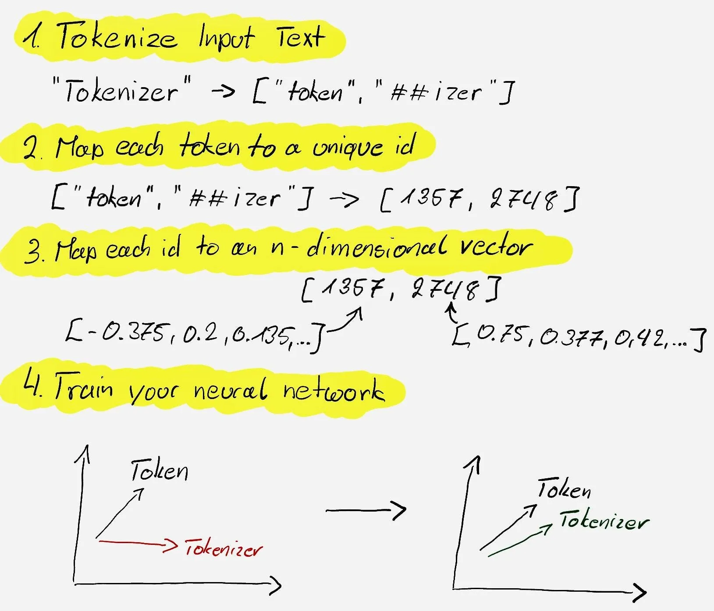

Content from Introduction to Natural Language Processing
Last updated on 2024-05-10 | Edit this page
Estimated time: 10 minutes
Overview
Questions
- What are some common research applications of NLP?
- What are the basic concepts and terminology of NLP?
- How can I use NLP in my research field?
- How can I acquire data for NLP tasks?
Objectives
- Define natural language processing and its goals.
- Identify main research applications and challenges of NLP.
- Explain the basic concepts and terminology of NLP, such as tokens, lemmas, and n-grams.
- Use some popular datasets and libraries to acquire data for NLP tasks.
Natural language processing in Reseach
Natural Language Processing (NLP) is becoming a popular and robust tool for a wide range of research projects. In this episode we embark on a journey to explore the transformative power of NLP tools in the realm of research.
It is tailored for researchers who are keen on harnessing the capabilities of NLP to enhance and expedite their work. Whether you are delving into text classification, extracting pivotal information, discerning sentiments, summarizing extensive documents, translating across languages, or developing sophisticated question-answering systems, this session will lay the foundational knowledge you need to leverage NLP effectively.
We will begin by delving into the Common Applications of NLP in Research, showcasing how these tools are not just theoretical concepts but practical instruments that drive forward today’s innovative research projects. From analyzing public sentiment to extracting critical data from a plethora of documents, NLP stands as a pillar in the modern researcher’s toolkit.
Next, we’ll demystify the Basic Concepts and Terminology of NLP. Understanding these fundamental terms is crucial, as they form the building blocks of any NLP application. We’ll cover everything from the basics of a corpus to the intricacies of transformers, ensuring you have a solid grasp of the language used in NLP.
Finally, we’ll guide you through Data Acquisition: Dataset Libraries, where you’ll learn about the treasure troves of data available at your fingertips. We’ll compare different libraries and demonstrate how to access and utilize these resources through hands-on examples.
By the end of this episode, you will not only understand the significance of NLP in research but also be equipped with the knowledge to start applying these tools to your own projects. Prepare to unlock new potentials and streamline your research process with the power of NLP!
1.1. Common Applications of NLP in Research
Sentiment Analysis is a powerful tool for researchers, especially in fields like market research, political science, and public health. It involves the computational identification of opinions expressed in text, categorizing them as positive, negative, or neutral. In market research for instance, sentiment analysis can be applied to product reviews to gauge consumer satisfaction: a study could analyze thousands of online reviews for a new smartphone model to determine the overall public sentiment. This can help companies identify areas of improvement or features that are well-received by consumers.
Information Extraction is crucial for quickly gathering specific information from large datasets. It is used extensively in legal research, medical research, and scientific studies to extract entities and relationships from texts. In legal research for example, information extraction can be used to sift through case law to find precedents related to a particular legal issue. A researcher could use NLP to extract instances of “negligence” from thousands of case files, aiding in the preparation of legal arguments.
Text Summarization helps researchers by providing concise summaries of lengthy documents, such as research papers or reports, allowing them to quickly understand the main points without reading the entire text. In biomedical research, text summarization can assist in literature reviews by providing summaries of research articles. For example, a researcher could use an NLP model to summarize articles on gene therapy, enabling them to quickly assimilate key findings from a vast array of publications.
Topic Modeling is used to uncover latent topics within large volumes of text, which is particularly useful in fields like sociology and history to identify trends and patterns in historical documents or social media data. For example, in historical research, topic modeling can reveal prevalent themes in primary source documents from a particular era. A historian might use NLP to analyze newspapers from the early 20th century to study public discourse around significant events like World War I.
Challenges of NLP
One of the significant challenges in NLP is dealing with the ambiguity of language. Words or phrases can have multiple meanings, and determining the correct one based on context can be difficult for NLP systems. In a research paper discussing “bank erosion,” an NLP system might confuse “bank” with a financial institution rather than the geographical feature, leading to incorrect analysis.
This challenge leads to the fact that NLP systems often struggle with contextual understanding which is crucial in text analysis tasks. This can lead to misinterpretation of the meaning and sentiment of text. If a research paper mentions “novel results,” an NLP system might interpret “novel” as a literary work instead of “new” or “original,” which could mislead the analysis of the paper’s contributions.
Suggested Resources:
- Python’s Natural Language Toolkit (NLTK) for sentiment analysis
- TextBlob, a library for processing textual data
- Stanford NER for named entity recognition
- spaCy, an open-source software library for advanced NLP
- Sumy, a Python library for automatic summarization of text documents
- BERT-based models for extractive and abstractive summarization
- Gensim for topic modeling and document similarity analysis
- MALLET, a Java-based package for statistical natural language processing
Content from Introduction to Text Preprocessing
Last updated on 2024-05-10 | Edit this page
Estimated time: 12 minutes
Overview
Questions
- How much data do you need for Deep Learning?
- Where can I find image data to train my model?
- How do I plot image data in python?
- How do I prepare image data for use in a convolutional neural network (CNN)?
- Know the difference between training, testing, and validation datasets.
Objectives
- Identify sources of image data.
- Understand the properties of image data.
- Write code to plot image data.
- Prepare an image dataset to train a convolutional neural network (CNN).
Deep Learning Workflow
Let’s start over from the beginning of our workflow.
Step 1. Formulate/ Outline the problem
Firstly we must decide what it is we want our Deep Learning system to do. This lesson is all about image classification and our aim is to put an image into one of ten categories: airplane, automobile, bird, cat, deer, dog, frog, horse, ship, or truck
Step 2. Identify inputs and outputs
Next we identify the inputs and outputs of the neural network. In our case, the data is images and the inputs could be the individual pixels of the images.
We are performing a classification problem and we want to output one category for each image.
Step 3. Prepare data
Deep Learning requires extensive training using example data which tells the network what output it should produce for a given input. In this workshop, our network will be trained on a series of images and told what they contain. Once the network is trained, it should be able to take another image and correctly classify its contents.
Depending on your situation, you will prepare your own custom data for training or use pre-existing data.
Unfortunately, this question is not easy to answer. It depends, among other things, on the complexity of the task (which you often do not know beforehand), the quality of the available dataset and the complexity of the network. For complex tasks with large neural networks, adding more data often improves performance. However, this is also not a generic truth: if the data you add is too similar to the data you already have, it will not give much new information to the neural network.
In case you have too little data available to train a complex network from scratch, it is sometimes possible to use a pretrained network that was trained on a similar problem. Another trick is data augmentation, where you expand the dataset with artificial data points that could be real. An example of this is mirroring images when trying to classify cats and dogs. An horizontally mirrored animal retains the label, but exposes a different view.
Custom image data
In some cases, you will create your own set of labelled images.
The steps to prepare your own custom image data include:
Custom data i. Data collection and Labeling:
For image classification the label applies to the entire image; object detection requires bounding boxes around objects of interest, and instance or semantic segmentation requires each pixel to be labelled.
There are a number of open source software used to label your dataset, including:
- (Visual Geometry Group) VGG Image Annotator (VIA)
- ImageJ can be extended with plugins for annotation
- COCO Annotator is designed specifically for creating annotations compatible with Common Objects in Context (COCO) format
Custom data ii. Data preprocessing:
This step involves various tasks to enhance the quality and consistency of the data:
Resizing: Resize images to a consistent resolution to ensure uniformity and reduce computational load.
Augmentation: Apply random transformations (e.g., rotations, flips, shifts) to create new variations of the same image. This helps improve the model’s robustness and generalisation by exposing it to more diverse data.
Normalisation: Scale pixel values to a common range, often between 0 and 1 or -1 and 1. Normalisation helps the model converge faster during training.
Label encoding is a technique used to represent categorical data with numerical labels.
Data Splitting: Split the data set into separate parts to have one for training, one for evaluating the model’s performance during training, and one reserved for the final evaluation of the model’s performance.
Before jumping into these specific preprocessing tasks, it’s important to understand that images on a computer are stored as numerical representations or simplified versions of the real world. Therefore it’s essential to take some time to understand these numerical abstractions.
Pixels
Images on a computer are stored as rectangular arrays of hundreds, thousands, or millions of discrete “picture elements,” otherwise known as pixels. Each pixel can be thought of as a single square point of coloured light.
For example, consider this image of a Jabiru, with a square area designated by a red box:

Now, if we zoomed in close enough to the red box, the individual pixels would stand out:

Note each square in the enlarged image area (i.e. each pixel) is all one colour, but each pixel can be a different colour from its neighbours. Viewed from a distance, these pixels seem to blend together to form the image.
Working with Pixels
As noted, in practice, real world images will typically be made up of a vast number of pixels, and each of these pixels will be one of potentially millions of colours.
In python, an image can represented as a 2- or 3-dimensional array, where each element corresponds to a pixel value in the image. In the context of images, these arrays often have dimensions for height, width, and colour channels (if applicable).
Let us start with the Jabiru image.
PYTHON
# load the required packages
from keras.utils import img_to_array
from keras.utils import load_img
# specify the image path
new_img_path = "../data/Jabiru_TGS.JPG"
# read in the image with default arguments
new_img_pil = load_img(new_img_path)
# check the image class and size
print('Image class :', new_img_pil.__class__)
print('Image size', new_img_pil.size)OUTPUT
Image class : <class 'PIL.JpegImagePlugin.JpegImageFile'>
Image size (552, 573)Image Dimensions - Resizing
The new image has shape (573, 552, 3), meaning it is
much larger in size, 573x552 pixels; a rectangle instead of a square;
and consists of three colour channels (RGB).
Recall from the introduction that our training data set consists of 50000 images of 32x32 pixels and three channels.
To reduce the computational load and ensure all of our images have a uniform size, we need to choose an image resolution (or size in pixels) and ensure all of the images we use are resized to that shape to be consistent.
There are a couple of ways to do this in python but one way is to
specify the size you want using an argument to the
load_img() function from keras.utils.
PYTHON
# read in the image and specify the target size
new_img_pil_small = load_img(new_img_path, target_size=(32,32))
# confirm the image class and size
print('Resized image class :', new_img_pil_small.__class__)
print('Resized image size', new_img_pil_small.size) OUTPUT
Resized image class : <class 'PIL.Image.Image'>
Resized image size (32, 32)Of course, if there are a large number of images to preprocess you do not want to copy and paste these steps for each image! Fortunately, Keras has a solution: tf.keras.utils.image_dataset_from_directory
Two of the most commonly used libraries for image representation and manipulation are NumPy and Pillow (PIL). Additionally, when working with deep learning frameworks like TensorFlow and PyTorch, images are often represented as tensors within these frameworks.
- NumPy is a powerful library for numerical computing in Python. It
provides support for creating and manipulating arrays, which can be used
to represent images as multidimensional arrays.
import numpy as np
- The Pillow library provides functions to open, manipulate, and save
various image file formats. It represents images using its own Image
class.
from PIL import Image- PIL Image Module documentation
- TensorFlow images are often represented as tensors that have
dimensions for batch size, height, width, and colour channels. This
framework provide tools to load, preprocess, and work with image data
seamlessly.
from tensorflow import keras- image preprocessing documentation
- Note Keras image functions also use PIL
Image augmentation
There are several ways to augment your data to increase the diversity of the training data and improve model robustness.
- Geometric Transformations
- rotation, scaling, zooming, cropping
- Flipping or Mirroring
- some classes, like horse, have a different shape when facing left or right and you want your model to recognize both
- Colour properties
- brightness, contrast, or hue
- these changes simulate variations in lighting conditions
We will not perform image augmentation in this lesson, but it is important that you are aware of this type of data preparation because it can make a big difference in your model’s ability to predict outside of your training data.
Information about these operations are included in the Keras document for Image augmentation layers.
Normalisation
Image RGB values are between 0 and 255. As input for neural networks, it is better to have small input values. The process of converting the RGB values to be between 0 and 1 is called normalization.
Before we can normalize our image values we must convert the image to an numpy array.
We introduced how to do this in Episode 01 Introduction to Deep Learning
but what you may not have noticed is that the
keras.datasets.cifar10.load_data function did the
conversion for us whereas now we will do it ourselves.
PYTHON
# first convert the image into an array for normalization
new_img_arr = img_to_array(new_img_pil_small)
# confirm the image class and shape
print('Converted image class :', new_img_arr.__class__)
print('Converted image shape', new_img_arr.shape)OUTPUT
Converted image class : <class 'numpy.ndarray'>
Converted image shape (32, 32, 3)Now that the image is an array, we can normalize the values. Let us also investigate the image values before and after we normalize them.
PYTHON
# inspect pixel values before and after normalisation
# extract the min, max, and mean pixel values BEFORE
print('BEFORE normalization')
print('Min pixel value ', new_img_arr.min())
print('Max pixel value ', new_img_arr.max())
print('Mean pixel value ', new_img_arr.mean().round())
# normalize the RGB values to be between 0 and 1
new_img_arr_norm = new_img_arr / 255.0
# extract the min, max, and mean pixel values AFTER
print('AFTER normalization')
print('Min pixel value ', new_img_arr_norm.min())
print('Max pixel value ', new_img_arr_norm.max())
print('Mean pixel value ', new_img_arr_norm.mean().round())OUTPUT
BEFORE normalization
Min pixel value 0.0
Max pixel value 255.0
Mean pixel value 87.0
AFTER normalization
Min pixel value 0.0
Max pixel value 1.0
Mean pixel value 0.0ChatGPT
Normalizing the RGB values to be between 0 and 1 is a common pre-processing step in machine learning tasks, especially when dealing with image data. This normalization has several benefits:
Numerical Stability: By scaling the RGB values to a range between 0 and 1, you avoid potential numerical instability issues that can arise when working with large values. Neural networks and many other machine learning algorithms are sensitive to the scale of input features, and normalizing helps to keep the values within a manageable range.
Faster Convergence: Normalizing the RGB values often helps in faster convergence during the training process. Neural networks and other optimization algorithms rely on gradient descent techniques, and having inputs in a consistent range aids in smoother and faster convergence.
Equal Weightage for All Channels: In RGB images, each channel (Red, Green, Blue) represents different colour intensities. By normalizing to the range [0, 1], you ensure that each channel is treated with equal weightage during training. This is important because some machine learning algorithms could assign more importance to larger values.
Generalization: Normalization helps the model to generalize better to unseen data. When the input features are in the same range, the learned weights and biases can be more effectively applied to new examples, making the model more robust.
Compatibility: Many image-related libraries, algorithms, and models expect pixel values to be in the range of [0, 1]. By normalizing the RGB values, you ensure compatibility and seamless integration with these tools.
The normalization process is typically done by dividing each RGB value (ranging from 0 to 255) by 255, which scales the values to the range [0, 1].
For example, if you have an RGB image with pixel values (100, 150, 200), after normalization, the pixel values would become (100/255, 150/255, 200/255) ≈ (0.39, 0.59, 0.78).
Remember that normalization is not always mandatory, and there could be cases where other scaling techniques might be more suitable based on the specific problem and data distribution. However, for most image-related tasks in machine learning, normalizing RGB values to [0, 1] is a good starting point.
One-hot encoding
A neural network can only take numerical inputs and outputs, and learns by calculating how “far away” the class predicted by the neural network is from the true class. When the target (label) is categorical data, or strings, it is very difficult to determine this “distance” or error. Therefore we will transform this column into a more suitable format. There are many ways to do this, however we will be using one-hot encoding.
One-hot encoding is a technique to represent categorical data as binary vectors, making it compatible with machine learning algorithms. Each category becomes a separate column, and the presence or absence of a category is indicated by 1s and 0s in the respective columns.
Let’s say you have a dataset with a “colour” column containing three categories: yellow, orange, purple.
Table 1. Original Data.
| colour | |
|---|---|
| yellow | 🟨 |
| orange | 🟧 |
| purple | 🟪 |
| yellow | 🟨 |
Table 2. After One-Hot Encoding.
| colour_yellow | colour_orange | colour_purple |
|---|---|---|
| 1 | 0 | 0 |
| 0 | 1 | 0 |
| 0 | 0 | 1 |
| 1 | 0 | 0 |
The Keras function for one_hot encoding is called to_categorical:
tf.keras.utils.to_categorical(y, num_classes=None, dtype="float32")
-
yis an array of class values to be converted into a matrix (integers from 0 to num_classes - 1). -
num_classesis the total number of classes. If None, this would be inferred as max(y) + 1. -
dtypeis the data type expected by the input. Default: ‘float32’
Data Splitting
The typical practice in machine learning is to split your data into two subsets: a training set and a test set. This initial split separates the data you will use to train your model from the data you will use to evaluate its performance.
After this initial split, you can choose to further split the training set into a training set and a validation set. This is often done when you are fine-tuning hyperparameters, selecting the best model from a set of candidate models, or preventing overfitting.
To split a dataset into training and test sets there is a very convenient function from sklearn called train_test_split:
sklearn.model_selection.train_test_split(*arrays, test_size=None, train_size=None, random_state=None, shuffle=True, stratify=None)
- The first two parameters are the dataset (X) and the corresponding targets (y) (i.e. class labels).
- Next is the named parameter
test_size. This is the fraction of the dataset used for testing and in this case0.2means 20 per cent of the data will be used for testing. -
random_statecontrols the shuffling of the dataset, setting this value will reproduce the same results (assuming you give the same integer) every time it is called. -
shufflewhich can be eitherTrueorFalse, it controls whether the order of the rows of the dataset is shuffled before splitting. It defaults toTrue. -
stratifyis a more advanced parameter that controls how the split is done. By setting it totargetthe train and test sets the function will return will have roughly the same proportions (with regards to the number of images of a certain class) as the dataset.
Pre-existing image data
In other cases you will be able to download an image dataset that is already labelled and can be used to classify a number of different object like the CIFAR-10 dataset. Other examples include:
- MNIST database - 60,000 training images of handwritten digits (0-9)
- ImageNet - 14 million hand-annotated images indicating objects from more than 20,000 categories. ImageNet sponsors an annual software contest where programs compete to achieve the highest accuracy. When choosing a pretrained network, the winners of these sorts of competitions are generally a good place to start.
- MS COCO - >200,000 labelled images used for object detection, instance segmentation, keypoint analysis, and captioning
Where labelled data exists, in most cases the data provider or other users will have created data-specific functions you can use to load the data. We already did this in the introduction:
PYTHON
from tensorflow import keras
# load the CIFAR-10 dataset included with the keras library
(train_images, train_labels), (test_images, test_labels) = keras.datasets.cifar10.load_data()
# create a list of classnames associated with each CIFAR-10 label
class_names = ['airplane', 'automobile', 'bird', 'cat', 'deer', 'dog', 'frog', 'horse', 'ship', 'truck']In this instance the data is likely already prepared for use in a CNN. However, it is always a good idea to first read any associated documentation to find out what steps the data providers took to prepare the images and second to take a closer at the images once loaded and query their attributes.
In our case, we still want prepare the datset with these steps:
- normalise the image pixel values to be between 0 and 1
- one-hot encode the training image labels
- divide the data into training, validation, and test subsets
We performed these operations in Step 3. Prepare data of the Introduction but let us create the function to prepare the dataset again knowing what we know now.
PYTHON
def prepare_dataset(train_images, train_labels):
# normalize the RGB values to be between 0 and 1
train_images = train_images / 255
test_images = train_labels / 255
# one hot encode the training labels
train_labels = keras.utils.to_categorical(train_labels, len(class_names))
# split the training data into training and validation set
train_images, val_images, train_labels, val_labels = train_test_split(
train_images, train_labels, test_size = 0.2, random_state=42)
return train_images, val_images, train_labels, val_labelsInspect the labels before and after one-hot encoding.
PYTHON
print()
print('train_labels before one hot encoding')
print(train_labels)
# one-hot encode labels
train_labels = keras.utils.to_categorical(train_labels, len(class_names))
print()
print('train_labels after one hot encoding')
print(train_labels)OUTPUT
train_labels before one hot encoding
[[6]
[9]
[9]
...
[9]
[1]
[1]]
train_labels after one hot encoding
[[0. 0. 0. ... 0. 0. 0.]
[0. 0. 0. ... 0. 0. 1.]
[0. 0. 0. ... 0. 0. 1.]
...
[0. 0. 0. ... 0. 0. 1.]
[0. 1. 0. ... 0. 0. 0.]
[0. 1. 0. ... 0. 0. 0.]]Callout
WAIT I thought there were TEN classes!? Where is the rest of the data?
The Spyder IDE uses the ‘…’ notation when it “hides” some of the data for display purposes.
To view the entire array, go the Variable Explorer in the upper right hand corner of your Spyder IDE and double click on the ‘train_labels’ object. This will open a new window that shows all of the columns.

A. Training Set
PYTHON
print('Number of training set images', train_images.shape[0])
print('Number of images in each class:\n', train_labels.sum(axis=0))OUTPUT
Number of training set images: 40000
Number of images in each class:
[4027. 4021. 3970. 3977. 4067. 3985. 4004. 4006. 3983. 3960.]B. Validation Set (we can use the same code as the training set)
PYTHON
print('Number of validation set images', val_images.shape[0])
print('Nmber of images in each class:\n', val_labels.sum(axis=0))OUTPUT
Number of validation set images: 10000
Nmber of images in each class:
[ 973. 979. 1030. 1023. 933. 1015. 996. 994. 1017. 1040.]ChatGPT
Data is typically split into the training, validation, and test data sets using a process called data splitting or data partitioning. There are various methods to perform this split, and the choice of technique depends on the specific problem, dataset size, and the nature of the data. Here are some common approaches:
Hold-Out Method:
In the hold-out method, the dataset is divided into two parts initially: a training set and a test set.
The training set is used to train the model, and the test set is kept completely separate to evaluate the model’s final performance.
This method is straightforward and widely used when the dataset is sufficiently large.
Train-Validation-Test Split:
The dataset is split into three parts: the training set, the validation set, and the test set.
The training set is used to train the model, the validation set is used to tune hyperparameters and prevent overfitting during training, and the test set is used to assess the final model performance.
This method is commonly used when fine-tuning model hyperparameters is necessary.
K-Fold Cross-Validation:
In k-fold cross-validation, the dataset is divided into k subsets (folds) of roughly equal size.
The model is trained and evaluated k times, each time using a different fold as the test set while the remaining k-1 folds are used as the training set.
The final performance metric is calculated as the average of the k evaluation results, providing a more robust estimate of model performance.
This method is particularly useful when the dataset size is limited, and it helps in better utilizing available data.
Stratified Sampling:
Stratified sampling is used when the dataset is imbalanced, meaning some classes or categories are underrepresented.
The data is split in such a way that each subset (training, validation, or test) maintains the same class distribution as the original dataset.
This ensures all classes are well-represented in each subset, which is important to avoid biased model evaluation.
It’s important to note that the exact split ratios (e.g., 80-10-10 or 70-15-15) may vary depending on the problem, dataset size, and specific requirements. Additionally, data splitting should be performed randomly to avoid introducing any biases into the model training and evaluation process.
Data preprocessing completed!
We now have a function we can use throughout the lesson to preprocess our data which means we are ready to learn how to build a CNN like we used in the introduction.
Key Points
- Image datasets can be found online or created uniquely for your research question.
- Images consist of pixels arranged in a particular order.
- Image data is usually preprocessed before use in a CNN for efficiency, consistency, and robustness.
- Input data generally consists of three sets: a training set used to fit model parameters; a validation set used to evaluate the model fit on training data; a test set used to evaluate the final model performance.
Content from Text Analysis
Last updated on 2024-05-12 | Edit this page
Estimated time: 12 minutes
Overview
Questions
- What are text analysis methods?
- How can I perform text analysis?
Objectives
- Define objectives associated with each one of the text analysis techniques.
- Implement named entity recognition, and topic modeling using Python libraries and frameworks, such as NLTK, and Gensim.
3.1. Introduction to Text-Analysis
In this episode, we will learn how to analyze text data for NLP tasks. We will explore some common techniques and methods for text analysis, such as named entity recognition, topic modeling, and text summarization. We will use some popular libraries and frameworks, such as spaCy, NLTK, and Gensim, to implement these techniques and methods.
Discussion
Teamwork: What are some of the goals of text analysis for NLP tasks in your research field (e.g. material science)? Think of some examples of NLP tasks that require text analysis, such as literature review, patent analysis, or material discovery. How does text analysis help to achieve these goals?
3.1. Named Entity Recognition
Named Entity Recognition is a process of identifying and classifying key elements in text into predefined categories. The categories could be names of persons, organizations, locations, expressions of times, quantities, monetary values, percentages, etc. Next, let’s discuss how it works.
Using a text example from Wikipedia can help us to see how NER works. Note that the spaCy library is a common framework here as well. Thus, first, we make sure that the library is installed and imported:
Create an NLP model (nlp) and download the small English model from spaCy that is suitable for general tasks.
Create a variable to store your text and then apply the model to process your text (text from Wikipedia):
text = “Australian Shares Exchange Ltd (ASX) is an Australian public company that operates Australia’s primary shares exchange, the Australian Shares Exchange (sometimes referred to outside of Australia as, or confused within Australia as, The Sydney Stock Exchange, a separate entity). The ASX was formed on 1 April 1987, through incorporation under legislation of the Australian Parliament as an amalgamation of the six state securities exchanges, and merged with the Sydney Futures Exchange in 2006. Today, ASX has an average daily turnover of A$4.685 billion and a market capitalization of around A$1.6 trillion, making it one of the world’s top 20 listed exchange groups, and the largest in the southern hemisphere. ASX Clear is the clearing house for all shares, structured products, warrants and, ASX Equity Derivatives.”
Use for loop to print all the named entities in the document:
The results will be:
output:
Australian Shares Exchange Ltd ORG
ASX ORG
Australian NORP
Australia GPE
the Australian Shares Exchange ORG
Australia GPE
Australia GPE
The Sydney Stock Exchange ORG
ASX ORG
1 April 1987 DATE
the Australian Parliament ORG
six CARDINAL
the Sydney Futures Exchange ORG
2006 DATE
Today DATE
ASX ORG
A$4.685 billion MONEY
around A$1.6 trillion MONEY
20 CARDINAL
A: part of the precipitate
Neural Networks
A neural network is an artificial intelligence technique loosely based on the way neurons in the brain work.
A single nueron
A neural network consists of connected computational units called neurons. Each neuron will:
- Take one or more inputs (\(x_1, x_2, ...\)), e.g., input data expressed as floating point numbers.
- Conduct three main operations most of the time:
- Calculate the weighted sum of the inputs where ($w_1, w_2, … $) indicate weights
- Add an extra constant weight (i.e. a bias term) to this weighted sum
- Apply a non-linear function to the output so far (using a predefined activation function such as the ReLU function)
- Return one output value, again a floating point number.
One example equation to calculate the output for a neuron is: \(output=ReLU(∑i(xi∗wi)+bias)\)

Combining multiple neurons into a network
Multiple neurons can be joined together by connecting the output of one to the input of another. These connections are associated with weights that determine the ‘strength’ of the connection, and the weights are adjusted during training. In this way, the combination of neurons and connections describe a computational graph, an example can be seen in the image below.
In most neural networks neurons are aggregated into layers. Signals travel from the input layer to the output layer, possibly through one or more intermediate layers called hidden layers. The image below illustrates an example of a neural network with three layers, each circle is a neuron, each line is an edge and the arrows indicate the direction data moves in.

Neural networks aren’t a new technique, they have been around since the late 1940s. But until around 2010 neural networks tended to be quite small, consisting of only 10s or perhaps 100s of neurons. This limited them to only solving quite basic problems. Around 2010 improvements in computing power and the algorithms for training the networks made much larger and more powerful networks practical. These are known as deep neural networks or Deep Learning.
Convolutional Neural Networks
A convolutional neural network (CNN) is a type of artificial neural network (ANN) most commonly applied to analyze visual imagery. They are designed to recognize the spatial structure of images when extracting features.
Step 4. Build an architecture from scratch or choose a pretrained model
Let us explore how to build a neural network from scratch. Although this sounds like a daunting task, with Keras it is surprisingly straightforward. With Keras you compose a neural network by creating layers and linking them together.
Parts of a neural network
There are three main components of a neural network:
- CNN Part 1. Input Layer
- CNN Part 2. Hidden Layers
- CNN Part 3. Output Layer
The output from each layer becomes the input to the next layer.
CNN Part 1. Input Layer
The Input in Keras gets special treatment when images are used. Keras
automatically calculates the number of inputs and outputs a specific
layer needs and therefore how many edges need to be created. This means
we must let Keras know how big our input is going to be. We do this by
instantiating a keras.Input class and pass it a tuple to
indicate the dimensionality of the input data.
The input layer is created with the tf.keras.Input
function and its first parameter is the expected shape of the input:
keras.Input(shape=None, batch_size=None, dtype=None, sparse=None, batch_shape=None, name=None, tensor=None)In our case, the shape of an image is defined by its pixel dimensions and number of channels:
OUTPUT
(40000, 32, 32, 3) # number of images, image width in pixels, image height in pixels, number of channels (RGB)OUTPUT
# CNN Part 1
# Input layer of 32x32 images with three channels (RGB)
inputs_intro = keras.Input(shape=train_images.shape[1:])CNN Part 2. Hidden Layers
The next component consists of the so-called hidden layers of the network. The reason they are referred to as hidden is because the true values of their nodes are unknown.
In a CNN, the hidden layers typically consist of convolutional, pooling, reshaping (e.g., Flatten), and dense layers.
Check out the Layers API section of the Keras documentation for each layer type and its parameters.
Convolutional Layers
A convolutional layer is a fundamental building block in a CNN designed for processing structured grid data, such as images. It applies convolution operations to input data using learnable filters or kernels, extracting local patterns and features (e.g. edges, corners). These filters enable the network to capture hierarchical representations of visual information, allowing for effective feature learning.
To find the particular features of an image, CNNs make use of a concept from image processing that precedes Deep Learning.
A convolution matrix, or kernel, is a matrix transformation that we ‘slide’ over the image to calculate features at each position of the image. For each pixel, we calculate the matrix product between the kernel and the pixel with its surroundings. Here is one example of a 3x3 kernel used to detect edges:
[[-1, -1, -1],
[0, 0, 0]
[1, 1, 1]]This kernel will give a high value to a pixel if it is on a horizontal border between dark and light areas.
In the following image, the effect of such a kernel on the values of a single-channel image stands out. The red cell in the output matrix is the result of multiplying and summing the values of the red square in the input, and the kernel. Applying this kernel to a real image demonstrates it does indeed detect horizontal edges.


There are several types of convolutional layers available in Keras depending on your application. We use the two-dimensional layer typically used for images:
keras.layers.Conv2D(filters, kernel_size, strides=(1, 1), padding="valid", activation=None, **kwargs)We want to create a Conv2D layer with 16 filters, a 3x3 kernel size, and the ‘relu’ activation function.
OUTPUT
# CNN Part 2
# Convolutional layer with 16 filters, 3x3 kernel size, and ReLU activation
x_intro = keras.layers.Conv2D(filters=16, kernel_size=(3, 3), activation='relu')(inputs_intro)The instantiation here has three parameters and a seemingly strange combination of parentheses, so let us break it down.
- The first parameter is the number of filters in this layer. This is
one of the hyperparameters of our system and should be chosen carefully.
- Good practice is to start with a relatively small number of filters in the first layer to prevent overfitting.
- Choosing a number of filters as a power of two (e.g., 32, 64, 128) is common.
- The second parameter is the kernel size which we already discussed. Smaller kernels are often used to capture fine-grained features and odd-sized filters are preferred because they have a centre pixel which helps maintain spatial symmetry during convolutions.
- The third parameter is the activation function to use.
- Here we choose relu which is one of the most commonly used in deep neural networks that is proven to work well.
- We will discuss activation functions later in Step 9. Tune
hyperparameters but to satisfy your curiosity,
ReLUstands for Rectified Linear Unit (ReLU).
- Next is an extra set of parenthenses with inputs in them that means after an instance of the Conv2D layer is created, it can be called as if it was a function. This tells the Conv2D layer to connect the layer passed as a parameter, in this case the inputs.
- Finally, we store a reference so we can pass it to the next layer.
Playing with convolutions
Convolutions applied to images can be hard to grasp at first. Fortunately, there are resources out there that enable users to interactively play around with images and convolutions:
Image kernels explained illustrates how different convolutions can achieve certain effects on an image, like sharpening and blurring.
The convolutional neural network cheat sheet provides animated examples of the different components of convolutional neural nets.
There are different ways of dealing with border pixels.
- You can ignore them, which means your output image is slightly smaller then your input.
- It is also possible to ‘pad’ the borders, e.g., with the same value or with zeros, so that the convolution can also be applied to the border pixels. In that case, the output image will have the same size as the input image.
Pooling Layers
The convolutional layers are often intertwined with Pooling layers. As opposed to the convolutional layer used in feature extraction, the pooling layer alters the dimensions of the image and reduces it by a scaling factor effectively decreasing the resolution of your picture.
The rationale behind this is that higher layers of the network should focus on higher-level features of the image. By introducing a pooling layer, the subsequent convolutional layer has a broader ‘view’ on the original image.
Similar to convolutional layers, Keras offers several pooling layers and one used for images (2D spatial data):
keras.layers.MaxPooling2D(pool_size=(2, 2), strides=None, padding="valid", data_format=None, name=None, **kwargs)We want to create a pooling layer with input window sized 2,2.
OUTPUT
# Pooling layer with input window sized 2,2
x_intro = keras.layers.MaxPooling2D(pool_size=(2, 2))(x_intro)The instantiation here has a single parameter, pool_size.
The function downsamples the input along its spatial dimensions (height and width) by taking the maximum value over an input window (of size defined by pool_size) for each channel of the input. By taking the maximum instead of the average, the most prominent features in the window are emphasized.
A 2x2 pooling size reduces the width and height of the input by a factor of 2. Empirically, a 2x2 pooling size has been found to work well in various for image classification tasks and also strikes a balance between down-sampling for computational efficiency and retaining important spatial information.
Dense layers
A dense layer has a number of neurons, which is a parameter you choose when you create the layer. When connecting the layer to its input and output layers every neuron in the dense layer gets an edge (i.e. connection) to all of the input neurons and all of the output neurons.

This layer is called fully connected, because all input neurons are taken into account by each output neuron. It aggregates global information about the features learned in previous layers to make a decision about the class of the input.
In Keras, a densely-connected layer is defined:
keras.layers.Dense(units, activation=None, **kwargs)Units in this case refer to the number of neurons.
The choice of how many neurons to specify is often determined through experimentation and can impact the performance of our CNN. Too few neurons may not capture complex patterns in the data but too many neurons may lead to overfitting.
We will choose 64 for our dense layer and ‘relu’ activation.
OUTPUT
# Dense layer with 64 neurons and ReLU activation
x_intro = keras.layers.Dense(64, activation='relu')(x_intro)Reshaping Layers: Flatten
The next type of hidden layer used in our introductory model is a
type of reshaping layer defined in Keras by the
tf.keras.layers.Flatten class. It is necessary when
transitioning from convolutional and pooling layers to fully connected
layers.
keras.layers.Flatten(data_format=None, **kwargs)The Flatten layer converts the output of the previous layer into a single one-dimensional vector that can be used as input for a dense layer.
OUTPUT
# Flatten layer to convert 2D feature maps into a 1D vector
x_intro = keras.layers.Flatten()(x_intro)A flatten layer function is typically used to transform the two-dimensional arrays (matrices) generated by the convolutional and pooling layers into a one-dimensional array. This is necessary when transitioning from the convolutional/pooling layers to the fully connected layers, which require one-dimensional input.
During the convolutional and pooling operations, a neural network extracts features from the input images, resulting in multiple feature maps, each represented by a matrix. These feature maps capture different aspects of the input image, such as edges, textures, or patterns. However, to feed these features into a fully connected layer for classification or regression tasks, they must be a single vector.
The flatten layer takes each element from the feature maps and arranges them into a single long vector, concatenating them along a single dimension. This transformation preserves the spatial relationships between the features in the original image while providing a suitable format for the fully connected layers to process.
Is one layer of each type enough?
Not for complex data!
A typical architecture for image classification is likely to include at least one convolutional layer, one pooling layer, one or more dense layers, and possibly a flatten layer.
Convolutional and Pooling layers are often used together in multipe sets to capture a wider range of features and learn more complex representations of the input data. Using this technique, the network can learn a hierarchical representation of features, where simple features detected in early layers are combined to form more complex features in deeper layers.
There isn’t a strict rule of thumb for the number of sets of convolutional and pooling layers to start with, however, there are some guidelines.
We are starting with a relatively small and simple architecture because we are limited in time and computational resources. A simple CNN with one or two sets of convolutional and pooling layers can still achieve decent results for many tasks but for your network you will experiment with different architectures.
OUTPUT
# CNN Part 2
# Convolutional layer with 16 filters, 3x3 kernel size, and ReLU activation
x_intro = keras.layers.Conv2D(16, (3, 3), activation='relu')(inputs_intro)
# Pooling layer with input window sized 2,2
x_intro = keras.layers.MaxPooling2D((2, 2))(x_intro)
# Second Convolutional layer with 32 filters, 3x3 kernel size, and ReLU activation
x_intro = keras.layers.Conv2D(32, (3, 3), activation='relu')(x_intro)
# Second Pooling layer with input window sized 2,2
x_intro = keras.layers.MaxPooling2D((2, 2))(x_intro)
# Flatten layer to convert 2D feature maps into a 1D vector
x_intro = keras.layers.Flatten()(x_intro)
# Dense layer with 64 neurons and ReLU activation
x_intro = keras.layers.Dense(64, activation='relu')(x_intro)CNN Part 3. Output Layer
Recall for the outputs we asked ourselves what we want to identify from the data. If we are performing a classification problem, then typically we have one output for each potential class.
In traditional CNN architectures, a dense layer is typically used as the final layer for classification. This dense layer receives the flattened feature maps from the preceding convolutional and pooling layers and outputs the final class probabilities or regression values.
For multiclass data, the softmax activation is used
instead of relu because it helps the computer give each
option (class) a likelihood score, and the scores add up to 100 per
cent. This way, it’s easier to pick the one the computer thinks is most
probable.
OUTPUT
# CNN Part 3
# Output layer with 10 units (one for each class) and softmax activation
outputs_intro = keras.layers.Dense(10, activation='softmax')(x_intro)Putting it all together
OUTPUT
# CNN Part 3
# Output layer with 10 units (one for each class) and softmax activation
outputs_intro = keras.layers.Dense(10, activation='softmax')(x_intro)PYTHON
def create_model_intro():
# CNN Part 1
# Input layer of 32x32 images with three channels (RGB)
inputs_intro = keras.Input(shape=train_images.shape[1:])
# CNN Part 2
# Convolutional layer with 16 filters, 3x3 kernel size, and ReLU activation
x_intro = keras.layers.Conv2D(16, (3, 3), activation='relu')(inputs_intro)
# Pooling layer with input window sized 2,2
x_intro = keras.layers.MaxPooling2D((2, 2))(x_intro)
# Second Convolutional layer with 32 filters, 3x3 kernel size, and ReLU activation
x_intro = keras.layers.Conv2D(32, (3, 3), activation='relu')(x_intro)
# Second Pooling layer with input window sized 2,2
x_intro = keras.layers.MaxPooling2D((2, 2))(x_intro)
# Flatten layer to convert 2D feature maps into a 1D vector
x_intro = keras.layers.Flatten()(x_intro)
# Dense layer with 64 neurons and ReLU activation
x_intro = keras.layers.Dense(64, activation='relu')(x_intro)
# CNN Part 3
# Output layer with 10 units (one for each class) and softmax activation
outputs_intro = keras.layers.Dense(10, activation='softmax')(x_intro)
# create the model
model_intro = keras.Model(inputs = inputs_intro,
outputs = outputs_intro,
name = "cifar_model_intro")
return model_introUse the function you created to create the introduction model and view a summary of it’s structure.
PYTHON
# create the introduction model
model_intro = create_model_intro()
# view model summary
model_intro.summary()OUTPUT
Model: "cifar_model_intro"
_________________________________________________________________
Layer (type) Output Shape Param #
=================================================================
input_1 (InputLayer) [(None, 32, 32, 3)] 0
conv2d (Conv2D) (None, 30, 30, 16) 448
max_pooling2d (MaxPooling2 (None, 15, 15, 16) 0
D)
conv2d_1 (Conv2D) (None, 13, 13, 32) 4640
max_pooling2d_1 (MaxPoolin (None, 6, 6, 32) 0
g2D)
flatten (Flatten) (None, 1152) 0
dense (Dense) (None, 64) 73792
dense_1 (Dense) (None, 10) 650
=================================================================
Total params: 79530 (310.66 KB)
Trainable params: 79530 (310.66 KB)
Non-trainable params: 0 (0.00 Byte)
_________________________________________________________________How to choose an architecture?
Even for this neural network, we had to make a choice on the number of hidden neurons. Other choices to be made are the number of layers and type of layers. You might wonder how you should make these architectural choices. Unfortunately, there are no clear rules to follow here, and it often boils down to a lot of trial and error. However, it is recommended to explore what others have done with similar datasets and problems. Another best practice is to start with a relatively simple architecture. Once running start to add layers and tweak the network to test if performance increases.
We have a model now what?
This CNN should be able to run with the CIFAR-10 dataset and provide reasonable results for basic classification tasks. However, do keep in mind this model is relatively simple, and its performance may not be as high as more complex architectures. The reason it’s called deep learning is because in most cases, the more layers we have, i.e. the deeper and more sophisticated CNN architecture we use, the better the performance.
How can we tell? We can inspect a couple metrics produced during the training process to detect whether our model is underfitting or overfitting. To do that, we continue with the next steps in our Deep Learning workflow, Step 5. Choose a loss function and optimizer and Step 6. Train model.
Key Points
- Artificial neural networks (ANN) are a machine learning technique based on a model inspired by groups of neurons in the brain.
- Convolution neural networks (CNN) are a type of ANN designed for image classification and object detection.
- The number of filters corresponds to the number of distinct features the layer is learning to recognise whereas the kernel size determines the level of features being captured.
- A CNN can consist of many types of layers including convolutional, pooling, flatten, and dense (fully connected) layers
- Convolutional layers are responsible for learning features from the input data.
- Pooling layers are often used to reduce the spatial dimensions of the data.
- The flatten layer is used to convert the multi-dimensional output of the convolutional and pooling layers into a flat vector.
- Dense layers are responsible for combining features learned by the previous layers to perform the final classification.
Content from Word Embedding
Last updated on 2024-05-10 | Edit this page
Estimated time: 16 minutes
Overview
Questions
- What is a vector space in the context of NLP?
- How can I visualize vector space in a 2D model?
- How can I use embeddings and how do embeddings capture the meaning of words?
Objectives
- Be able to explain vector space and how it is related to text analysis.
- Identify the tools required for text embeddings.
- To explore the Word2Vec algorithm and its advantages over traditional models.
4.1. Introduction to Vector Space & Embeddings:
We have discussed how tokenization works and how it is important in text analysis, however, this is not the whole story of preprocessing. For conducting robust and reliable text analysis with NLP models, vectorization and embedding are required after tokenization. To understand this concept, we first talk about vector space.
Vector space models represent text data as vectors, which can be used in various machine learning algorithms. Embeddings are dense vectors that capture the semantic meanings of words based on their context.
source
A: Ignoring stop words might lead to loss of some contextual information but can also reduce noise. Preserving word order can be crucial for understanding the meaning, especially in languages with flexible syntax.
Tokenization is a fundamental step in the processing of text for vector space models. It involves breaking down a string of text into individual units, or “tokens,” which typically represent words or phrases. Here’s how tokenization impacts the representation of text in vector space models:
- Granularity: Tokenization determines the granularity of text representation. Finer granularity (e.g., splitting on punctuation) can capture more nuances but may increase the dimensionality of the vector space.
- Dimensionality: Each unique token becomes a dimension in the vector space. The choice of tokenization can significantly affect the number of dimensions, with potential implications for computational efficiency and the “curse of dimensionality.”
- Semantic Meaning: Proper tokenization ensures that semantically significant units are captured as tokens, which is crucial for the model to understand the meaning of the text.
Ignoring common words, or “stop words,” can also have a significant impact:
Noise Reduction: Stop words are often filtered out to reduce noise since they usually don’t carry important meaning and are highly frequent (e.g., “the,” “is,” “at”).
Focus on Content Words: By removing stop words, the model can focus on content words that carry the core semantic meaning, potentially improving the performance of tasks like information retrieval or topic modeling.
Computational Efficiency: Ignoring stop words reduces the dimensionality of the vector space, which can make computations more efficient.
The importance of word order is another critical aspect:
Contextual Meaning: Word order is essential for capturing the syntactic structure and meaning of a sentence. Traditional bag-of-words models ignore word order, which can lead to a loss of contextual meaning.
Phrase Identification: Preserving word order allows for the identification of multi-word expressions and phrases that have distinct meanings from their constituent words.
Word Embeddings: Advanced models like word embeddings (e.g., Word2Vec) and contextual embeddings (e.g., BERT) can capture word order to some extent, leading to a more nuanced understanding of text semantics.
In summary, tokenization, the treatment of stop words, and the consideration of word order are all crucial factors that influence how text is represented in vector space models, affecting both the quality of the representation and the performance of downstream tasks.
Tokenization Vs. Vectorization Vs. Embedding
Initially, tokenization breaks down text into discrete elements, or tokens, which can include words, phrases, symbols, and even punctuation, each represented by a unique numerical identifier. These tokens are then mapped to vectors of real numbers within an n-dimensional space, a process that is part of embedding. During model training, these vectors are adjusted to reflect the semantic similarities between tokens, positioning those with similar meanings closer together in the embedding space. This allows the model to grasp the nuances of language and transforms raw text into a format that machine learning algorithms can interpret, paving the way for advanced text analysis and understanding.
4.2. Bag of Words & TF-IDF:
Feature extraction in machine learning involves creating numerical features that describe a document’s relationship to its corpus. Traditional methods like Bag-of-Words and TF-IDF count words or n-grams, with the latter assigning weights based on a word’s importance, calculated by Term Frequency (TF) and Inverse Document Frequency (IDF). TF measures a word’s importance within a document, while IDF assesses its rarity across the corpus.
The product of TF and IDF gives the TF-IDF score, which balances a word’s frequency in a document against its commonness in the corpus. This approach helps to highlight significant words while diminishing the impact of commonly used words like “the” or “a.”
- BoW “encodes the total number of times a document uses each word in the associated corpus through the CounterVectorizer.”
- TF-IDF “creates features for each document based on how often each word shows up in a document versus the entire corpus.
- source
A: To compare the Bag of Words (BoW) and Term Frequency-Inverse Document Frequency (TF-IDF) methods in representing text data and their implications for sentiment analysis.
Data Collection: Gather a corpus of product reviews. For this activity, let’s assume we have a list of reviews stored in a variable called reviews. Clean the text data by removing punctuation, converting to lowercase, and possibly removing stop words. Use a vectorizer to convert the reviews into a BoW representation.
Discuss how BoW represents the frequency of words without considering the context or rarity across documents. Use a vectorizer to convert the same reviews into a TF-IDF representation. Discuss how TF-IDF represents the importance of words by considering both the term frequency and how unique the word is across all documents.
Teamwork
Sentiment Analysis Implications:
Analyze a corpus of product reviews using both BoW and TF-IDF. Consider how the lack of context in BoW might affect sentiment analysis. Evaluate whether TF-IDF’s emphasis on unique words improves the model’s ability to understand sentiment.
Share Findings: Groups should present their findings, highlighting the strengths and weaknesses of each method.
PYTHON
from sklearn.feature_extraction.text import CountVectorizer, TfidfVectorizer
# Sample corpus of product reviews
reviews = [
"Great product, really loved it!",
"Bad quality, totally disappointed.",
"Decent product for the price.",
"Excellent quality, will buy again!"
]
# Initialize the CountVectorizer for BoW
bow_vectorizer = CountVectorizer(stop_words='english')
# Fit and transform the reviews
bow_matrix = bow_vectorizer.fit_transform(reviews)
# Display the BoW matrix
print("Bag of Words Matrix:")
print(bow_matrix.toarray())
# Initialize the TfidfVectorizer for TF-IDF
tfidf_vectorizer = TfidfVectorizer(stop_words='english')
# Fit and transform the reviews
tfidf_matrix = tfidf_vectorizer.fit_transform(reviews)
# Display the TF-IDF matrix
print("\nTF-IDF Matrix:")
print(tfidf_matrix.toarray())The BoW matrix shows the frequency of each word in the reviews, disregarding context and word importance. The TF-IDF matrix shows the weighted importance of words, giving less weight to common words and more to unique ones.
In sentiment analysis, BoW might misinterpret sentiments due to ignoring context, while TF-IDF might capture nuances better by emphasizing words that are significant in a particular review.
By comparing BoW and TF-IDF, participants can gain insights into how each method processes text data and their potential impact on NLP tasks like sentiment analysis. This activity encourages critical thinking about feature representation in machine learning models.
4.3. Word2Vec Algorithm:
More advanced techniques like Word2Vec and GLoVE, as well as feature learning during neural network training, have also been developed to improve feature extraction.
Word2Vec uses neural networks to learn word associations from large text corpora. It has two architectures: Skip-Gram and Continuous Bag-of-Words (CBOW).
After training, it discards the final layer and outputs word embeddings that capture context. These embeddings capture the context of words, making similar contexts yield similar embeddings. Post-data preprocessing, these numerical features can be used in various NLP models for tasks like classification or named entity recognition.
Now let’s see how this framework can be used in practice. First import required libraries: Start by importing necessary libraries like gensim for Word2Vec and nltk for tokenization. Next, prepare the data: Tokenize your text data into words.
PYTHON
from gensim.models import Word2Vec
from nltk.tokenize import word_tokenize
# Sample text
text = "Tokenization splits text into words. Embeddings capture semantic meaning."
# Tokenize the text
tokens = word_tokenize(text.lower())
Now train the model: Use the Word2Vec class from gensim to train your model on the tokenized sentences.
PYTHON
from gensim.models import Word2Vec
from nltk.tokenize import word_tokenize
# Sample text
text = "Tokenization splits text into words. Embeddings capture semantic meaning."
# Tokenize the text
tokens = word_tokenize(text.lower())Retrieve Vectors: After training, use the model to get vectors for words of interest.
The code tokenizes the sample text, trains a Word2Vec model, and retrieves the vector for the word ‘embeddings’.
The resulting vector is a 50-dimensional representation of ‘embeddings’, capturing its context within the sample text. This vector can then be used in various NLP tasks to represent the semantic meaning of the word ‘embeddings’.
By understanding the roles of tokenization and embedding, we can better prepare text data for complex NLP tasks and build models that more accurately interpret human language.
Global Vectors for Word Representation (GLoVE)
GLoVE is a model for learning word embeddings, which are representations of words in the form of high-dimensional vectors. Unlike Word2Vec, which uses a neural network to learn word embeddings from local context information, GLoVE is designed to capture both global statistics and local context. Here’s how GLoVE stands out:
- Matrix Factorization: GLoVE uses matrix factorization on a word co-occurrence matrix that reflects how often each word appears in the context of every other word within a large corpus.
- Global Word-Word Co-Occurrence: It focuses on word-to-word co-occurrence globally across the entire corpus, rather than just within a local context window as in Word2Vec.
- Weighting Function: GLoVE employs a weighting function that helps to address the disparity in word co-occurrence frequencies, giving less weight to rare and frequent co-occurrences.
The main difference between GLoVE and Word2Vec is that GLoVE is built on the idea that word meanings can be derived from their co-occurrence probabilities with other words, and hence it incorporates global corpus statistics, whereas Word2Vec relies more on local context information. This allows GLoVE to effectively capture both the semantic and syntactic relationships between words, making it powerful for various natural language processing tasks.
Key Points
- Tokenization is crucial for converting text into a format usable by machine learning models.
- BoW and TF-IDF are fundamental techniques for feature extraction in NLP.
- Word2Vec and GloVE generate embeddings that encapsulate word meanings based on context and co-occurrence, respectively.
- Understanding these concepts is essential for building effective NLP models that can interpret and process human language.
Content from Transformers for Natural Language Processing
Last updated on 2024-05-12 | Edit this page
Estimated time: 12 minutes
Overview
Questions
- How do Transformers work?
- How can I use Transformers for text analysis?
Objectives
- To be able to describe Transformers’ architecture.
- To be able to implement sentiment analysis, and text summarization using transformers.
Transformers have revolutionized the field of NLP since their introduction by the Google team in 2017. Unlike previous models that processed text sequentially, Transformers use an attention mechanism to process all words at once, allowing them to capture context more effectively. This parallel processing capability enables Transformers to handle long-range dependencies and understand the nuances of language better than their predecessors. For now, try to recognize the building blocks of the general structure of a transformer
5.1. Introduction to Artificial Neural Networks
To understand how Transformers work we also need to learn about artificial neural networks (ANNs). Imagine a neural network as a team of workers in a factory. Each worker (neuron) has a specific task (processing information), and they pass their work along to the next person in line until the final product (output) is created.
Just like a well-organized assembly line, a neural network processes information in stages, with each neuron contributing to the final result.
In the context of machine learning, a multilayer perceptron (MLP) is indeed a fully connected multi-layer neural network and is a classic example of a feedforward artificial neural network (ANN). It typically includes an input layer, one or more hidden layers, and an output layer. When an MLP has more than one hidden layer, it can be considered a deep ANN, part of a broader category known as deep learning.
Summation and Activation Function
If we zoom into a neuron in the hidden layer, we can see the mathematical operations (weights summation and activation function). An input is transformed at each hidden layer node through a process that multiplies the input (x_i) by learned weights (w_i), adds a bias (b), and then applies an activation function to determine the node’s output. This output is either passed on to the next layer or contributes to the final output of the network. Essentially, each node performs a small calculation that, when combined with the operations of other nodes, allows the network to process complex patterns and data.
Backpropagation is an algorithmic cornerstone in the training of ANNs, serving as a method for optimizing weights and biases through gradient descent. Conceptually, it is akin to an iterative refinement process where the network’s output error is propagated backward, layer by layer, using the chain rule of calculus. This backward flow of error information allows for the computation of gradients, which inform the magnitude and direction of adjustments to be made to the network’s parameters. The objective is to iteratively reduce the differences between the predicted output and the actual target values. This systematic adjustment of parameters, guided by error gradients, incrementally leads to a more accurate ANN model.
Challenge
Teamwork: When we talk about ANNs, we also consider their parameters. But what are the parameters? Draw a small neural network with 3 following layers: x1
- Input Layer: 3 neurons
- Hidden Layer: 4 neurons
- Output Layer: 1 neurons
- Connect each neuron in the input layer to every neuron in the hidden layer (next layer). How many connections (weights) do we have?
- Now, add a bias for each neuron in the hidden layer. How many biases do we have?
- Repeat the process for the hidden layer to the output layer.
- (3 { neurons} x 4 { neurons} + 4{ biases}) = 16
- (4 { neurons} x 1 { neurons} + 1{ biases}) = 5
- Total parameters for this network: (16 + 5 = 21)
We would add: - (4 * 4) weights from the first to the second hidden layer - (4) biases for the new hidden layer - (4 * 1) weights from the second hidden layer to the output layer (we already counted the biases for the output layer)
That’s an additional (16 + 4 = 20) parameters, bringing our total to (21 + 20 = 41) parameters.
5.2. Transformers
As mentioned in the introduction, Most of the recent NLP models are built based on Transformers. Building on our understanding of ANNs, let’s explore the architecture of transformers. Transformers consist of several key components that work together to process and generate data.
A:
Briefly, we can say:
- Encoder: Processes input text into contextualized representations, enabling the understanding of the context within the input sequence. It is like the ‘listener’ in a conversation, taking in information and understanding it.
- Decoder: Generates output sequences by translating the contextualized representations from the encoder into coherent text, often using mechanisms like masked multi-head attention and encoder-decoder attention to maintain sequence order and coherence. This acts as the ‘speaker’ in the conversation, generating the output based on the information processed by the encoder.
- Positional Encoding: Adds unique information to each word embedding, indicating the word’s position in the sequence, which is essential for the model to maintain the order of words and understand their relative positions within a sentence
- Input Embedding: The input text is converted into vectors that the model can understand. Think of it as translating words into a secret code that the transformer can read.
- Output Embedding: Similar to input embedding, but for the output text. It translates the transformer’s secret code back into words we can understand.
- Softmax Output: Applies the softmax function to the final layer’s outputs to convert them into a probability distribution, which helps in tasks like classification and sequence generation by selecting the most likely next word or class. It is like choosing the best response in a conversation from many options.
Attention Mechanism
So far, we have learned what the architecture of a transformer block looks like. However, for simplicity, many parts of this architecture have not been considered.
In the following section, we will show the underlying components of a transformer.
For more details see source.
Attention mechanisms in transformers, allow LLMs to focus on different parts of the input text to understand context and relationships between words. The concept of ‘attention’ in encoders and decoders is akin to the selective focus of ‘fast reading,’ where one zeroes in on crucial information and disregards the irrelevant. This mechanism adapts to the context of a query, emphasizing different words or tokens based on the query’s intent. For instance, in the sentence “Sarah went to a restaurant to meet her friend that night,” the words highlighted would vary depending on whether the question is about the action (What?), location (Where?), individuals involved (Who?), or time (When?).
In transformer models, this selective focus is achieved through ‘queries,’ ‘keys,’ and ‘values,’ all represented as vectors. A query vector seeks out the closest key vectors, which are encoded representations of values. The relationship between words, like ‘where’ and ‘restaurant,’ is determined by their frequency of co-occurrence in sentences, allowing the model to assign greater attention to ‘restaurant’ when the query pertains to a location. This dynamic adjustment of focus enables transformers to process language with a nuanced understanding of context and relevance.
A: Transformers, initially popular in NLP, have found applications beyond text analysis. They excel in computer vision, speech recognition, and even genomics. Their versatility extends to music generation and recommendation systems. Transformers’ innovative architecture allows them to adapt to diverse tasks, revolutionizing AI applications.
Transformers in Text Translation
Imagine you want to translate the sentence “What time is it?” from English to German using a transformer. The input embedding layer converts each English word into a vector. The six layers of encoders process these vectors, understanding the context of the sentence. The six layers of decoders then start generating the German translation, one word at a time.
For each word, the Softmax output predicts the most likely next word in German. The output embedding layer converts these predictions back into readable German words. By the end, you get the German translation of “What time is it?” as “Wie spät ist es?”
Transformers are essential for NLP tasks because they overcome the limitations of earlier models like recurrent neural networks (RNNs) and long short-term memory models (LSTMs), which struggled with long sequences and were computationally intensive respectively. Transformers, in contrast to the sequential input processing of RNNs, handle entire sequences simultaneously. This parallel processing capability enables data scientists to employ GPUs to train large language models (LLMs) based on transformers, which markedly decreases the duration of training.
5.3. Semantic Analysis
Sentiment analysis is a powerful tool in NLP that helps determine the emotional tone behind the text. It is used to understand opinions, sentiments, emotions, and attitudes from various entities and classify them according to their polarity.
Activity
Teamwork: How do you categorize the following text in terms of positive and negative sounding? Select an Emoji.
“A research team has unveiled a novel ligand exchange technique that enables the synthesis of organic cation-based perovskite quantum dots (PQDs), ensuring exceptional stability while suppressing internal defects in the photoactive layer of solar cells.” source
Computer models can do this job for us! Let’s see how it works through a step-by-step example: First, install the required libraries and pipelines:
Now, initialize the sentiment analysis pipeline and analyze the sentiment of a sample text:
PYTHON
sentiment_pipeline = pipeline('sentiment-analysis')
text = " A research team has unveiled a novel ligand exchange technique that enables the synthesis of organic cation-based perovskite quantum dots (PQDs), ensuring exceptional stability while suppressing internal defects in the photoactive layer of solar cells."
sentiment = sentiment_pipeline(text)After the analysis is completed, you can print out the results:
PYTHON
print(f"Sentiment: {sentiment[0]['label']}, Confidence: {sentiment[0]['score']:.2f}")
# Output
Output: Sentiment: POSITIVE, Confidence: 1.00In this example, the sentiment analysis pipeline from the Hugging Face library is used to analyze the sentiment of a research paper abstract. The model predicts the sentiment as positive, negative, or neutral, along with a confidence score. This can be particularly useful for gauging the reception of research papers in a field.
VADRER
Valence Aware Dictionary and sEntiment Reasoner (VADER) is a lexicon and rule-based sentiment analysis tool that is particularly attuned to sentiments expressed in social media. VADER analyzes the sentiment of the text and returns a dictionary with scores for negative, neutral, positive, and a compound score that aggregates them. It is useful for quick sentiment analysis, especially on social media texts. Let’s how we can use this framework.
First, we need to import the SentimentIntensityAnalyzer module from VADER library:
PYTHON
from vaderSentiment.vaderSentiment import SentimentIntensityAnalyzer
# Initialize VADER sentiment intensity analyzer:
analyzer = SentimentIntensityAnalyzer()
# We use the same sample text:
text = " A research team has unveiled a novel ligand exchange technique that enables the synthesis of organic cation-based perovskite quantum dots (PQDs), ensuring exceptional stability while suppressing internal defects in the photoactive layer of solar cells."
# Now we can analyze sentiment:
vader_sentiment = analyzer.polarity_scores(text)
# Print the sentiment:
print(f"Sentiment: {vader_sentiment}")
Output: Sentiment: {'neg': 0.069, 'neu': 0.818, 'pos': 0.113, 'compound': 0.1779}A: Transformers use deep learning models that can understand context and nuances of language, making them suitable for complex and lengthy texts. They can be particularly useful for sentiment analysis of research papers, as they can understand the complex language and context often found in academic writing. This allows for a more nuanced understanding of the sentiment conveyed in the papers. VADER, on the other hand, is a rule-based model that excels in analyzing short texts with clear sentiment expressions, often found in social media.
Challenge
Use the transformers library to perform sentiment analysis on the following text:
“Perovskite nanocrystals have emerged as a promising class of materials for next-generation optoelectronic devices due to their unique properties. Their crystal structure allows for tunable bandgaps, which are the energy differences between occupied and unoccupied electronic states. This tunability enables the creation of materials that can absorb and emit light across a wide range of the electromagnetic spectrum, making them suitable for applications like solar cells, light-emitting diodes (LEDs), and lasers.”
Print the original text and the sentiment score and label. You can use the following code to load the transformers library and the pre-trained model and tokenizer for sentiment analysis:
A:
PYTHON
from transformers import pipeline
sentiment_analysis = pipeline("sentiment-analysis")
text = "This book is amazing. It is well-written, engaging, and informative. I learned a lot from reading it and I highly recommend it to anyone interested in natural language processing."
print(text)
print(sentiment_analysis(text))Output:
PYTHON
output: "Perovskite nanocrystals have emerged as a promising class of materials for next-generation optoelectronic devices due to their unique properties. Their crystal structure allows for tunable bandgaps, which are the energy differences between occupied and unoccupied electronic states. This tunability enables the creation of materials that can absorb and emit light across a wide range of the electromagnetic spectrum, making them suitable for applications like solar cells, light-emitting diodes (LEDs), and lasers."
[{'label': 'POSITIVE', 'score': 0.9998656511306763}]5.4. Text Summarization
Text summarization is the process of distilling the most important information from a source (or sources) to produce an abbreviated version for a particular user and task. It can be broadly classified into two types: extractive and abstractive summarization.
A:
Now, let’s see how to use the Hugging Face Transformers library to perform abstractive summarization. First, from the transformers import pipeline:
Input a sample text from an article from source:
text = “A groundbreaking research breakthrough in solar energy has propelled the development of the world’s most efficient quantum dot (QD) solar cell, marking a significant leap towards the commercialization of next-generation solar cells. This cutting-edge QD solution and device have demonstrated exceptional performance, retaining their efficiency even after long-term storage. Led by Professor Sung-Yeon Jang from the School of Energy and Chemical Engineering at UNIST, a team of researchers has unveiled a novel ligand exchange technique. This innovative approach enables the synthesis of organic cation-based perovskite quantum dots (PQDs), ensuring exceptional stability while suppressing internal defects in the photoactive layer of solar cells. Our developed technology has achieved an impressive 18.1% efficiency in QD solar cells,” stated Professor Jang. This remarkable achievement represents the highest efficiency among quantum dot solar cells recognized by the National Renewable Energy Laboratory (NREL) in the United States. The increasing interest in related fields is evident, as last year, three scientists who discovered and developed QDs, as advanced nanotechnology products, were awarded the Nobel Prize in Chemistry. QDs are semiconducting nanocrystals with typical dimensions ranging from several to tens of nanometers, capable of controlling photoelectric properties based on their particle size. PQDs, in particular, have garnered significant attention from researchers due to their outstanding photoelectric properties. Furthermore, their manufacturing process involves simple spraying or application to a solvent, eliminating the need for the growth process on substrates. This streamlined approach allows for high-quality production in various manufacturing environments. However, the practical use of QDs as solar cells necessitates a technology that reduces the distance between QDs through ligand exchange, a process that binds a large molecule, such as a ligand receptor, to the surface of a QD. Organic PQDs face notable challenges, including defects in their crystals and surfaces during the substitution process. As a result, inorganic PQDs with limited efficiency of up to 16% have been predominantly utilized as materials for solar cells. In this study, the research team employed an alkyl ammonium iodide-based ligand exchange strategy, effectively substituting ligands for organic PQDs with excellent solar utilization. This breakthrough enables the creation of a photoactive layer of QDs for solar cells with high substitution efficiency and controlled defects. Consequently, the efficiency of organic PQDs, previously limited to 13% using existing ligand substitution technology, has been significantly improved to 18.1%. Moreover, these solar cells demonstrate exceptional stability, maintaining their performance even after long-term storage for over two years. The newly-developed organic PQD solar cells exhibit both high efficiency and stability simultaneously. Previous research on QD solar cells predominantly employed inorganic PQDs,” remarked Sang-Hak Lee, the first author of the study. Through this study, we have demonstrated the potential by addressing the challenges associated with organic PQDs, which have proven difficult to utilize. This study presents a new direction for the ligand exchange method in organic PQDs, serving as a catalyst to revolutionize the field of QD solar cell material research in the future,” commented Professor Jang. The findings of this study, co-authored by Dr. Javid Aqoma Khoiruddin and Sang-Hak Lee, have been published online in Nature Energy on January 27, 2024. The research was made possible through the support of the ‘Basic Research Laboratory (BRL)’ and ‘Mid-Career Researcher Program,’ as well as the ‘Nano·Material Technology Development Program,’ funded by the National Research Foundation of Korea (NRF) under the Ministry of Science and ICT (MSIT). It has also received support through the ’Global Basic Research Lab Project.”
Now we can perform summarization and print the results:
PYTHON
summary = summarizer(text, max_length=130, min_length=30, do_sample=False)
# Print the summary:
print("Summary:", summary[0]['summary_text'])
Output:
Sumy for summarization
Sumy is a Python library for extractive summarization. It uses algorithms like LSA to rank sentences based on their importance and creates a summary by selecting the top-ranked sentences. We can see how it works in practice: We start with importing the PlaintextParser and LsaSummarizer modules:
PYTHON
from sumy.parsers.plaintext import PlaintextParser
from sumy.nlp.tokenizers import Tokenizer
from sumy.summarizers.lsa import LsaSummarizerTo create a parser we use the same text sample from an article from source:
PYTHON
parser = PlaintextParser.from_string(text, Tokenizer("english"))
# Next, we initialize the LSA summarize:
summarizer = LsaSummarizer()
# Summarize the text and print the results
summary = summarizer(parser.document, 5)
for sentence in summary:
print(sentence)
Output:Sumy extracts key sentences from the original text, which can be quicker but may lack the cohesiveness of an abstractive summary. On the other hand, Transformer is suitable for generating a new summary that captures the text’s essence in a coherent and often more readable form.
A: Transformers are particularly useful for summarizing research papers and documents where understanding the context and generating a coherent summary is crucial. They can produce summaries that are not only concise but also maintain the narrative flow, making them more readable. Sumy, while quicker and less resource-intensive, is best suited for scenarios where extracting key information without the need for narrative flow is acceptable.
text: “Perovskite nanocrystals are a class of semiconductor nanocrystals that have attracted a lot of attention in recent years due to their unique optical and electronic properties. Perovskite nanocrystals have an ABX3 composition, where A is a monovalent cation (such as cesium, methylammonium, or formamidinium), B is a divalent metal (such as lead or tin), and X is a halide (such as chloride, bromide, or iodide). Perovskite nanocrystals can emit brightly across the entire visible spectrum, with tunable colors depending on their composition and size. They also have high quantum yields, fast radiative decay rates, and narrow emission line widths, making them ideal candidates for various optoelectronic applications. The first report of perovskite nanocrystals was published in 2014 by Protesescu et al., who synthesized cesium lead halide nanocrystals using a hot-injection method. They demonstrated that the nanocrystals had cubic or orthorhombic crystal structures, depending on the halide ratio, and that they exhibited strong photoluminescence with quantum yields up to 90%. They also showed that the emission wavelength could be tuned from 410 nm to 700 nm by changing the halide composition or the nanocrystal size. Since then, many other groups have developed various synthetic methods and strategies to control the shape, size, composition, and surface chemistry of perovskite nanocrystals. One of the remarkable features of perovskite nanocrystals is their defect tolerance, which means that they can maintain high luminescence even with a high density of surface or bulk defects. This is in contrast to other semiconductor nanocrystals, such as CdSe, which require surface passivation to prevent non-radiative recombination and quenching of the emission. The defect tolerance of perovskite nanocrystals is attributed to their electronic band structure, which has a large density of states near the band edges and a small effective mass of the charge carriers. These factors reduce the formation energy and the localization of defects and enhance the radiative recombination rate of the excitons. Another interesting aspect of perovskite nanocrystals is their weak quantum confinement, which means that their emission properties are not strongly affected by their size. This is because the exciton binding energy of perovskite nanocrystals is much larger than the quantum confinement energy, and thus the excitons are localized within a few unit cells regardless of the nanocrystal size. As a result, perovskite nanocrystals can exhibit narrow emission line widths even with a large size distribution, which simplifies the synthesis and purification processes. Moreover, perovskite nanocrystals can show dual emission from both the band edge and the surface states, which can be exploited for color tuning and white light generation. Perovskite nanocrystals have been applied to a wide range of photonic devices, such as light-emitting diodes, lasers, solar cells, photodetectors, and scintillators. Perovskite nanocrystals can offer high brightness, color purity, and stability as light emitters, and can be integrated with various substrates and architectures. Perovskite nanocrystals can also act as efficient light absorbers and charge transporters and can be coupled with other materials to enhance the performance and functionality of the devices. Perovskite nanocrystals have shown promising results in terms of efficiency, stability, and versatility in these applications. However, perovskite nanocrystals also face some challenges and limitations, such as the toxicity of lead, the instability under ambient conditions, the hysteresis and degradation under electrical or optical stress, and the reproducibility and scalability of the synthesis and fabrication methods. These issues need to be addressed and overcome to realize the full potential of perovskite nanocrystals in practical devices. Therefore, further research and development are needed to improve the material quality, stability, and compatibility of perovskite nanocrystals, and to explore new compositions, structures, and functionalities of these fascinating nanomaterials.”
A: You can use the following code to load the transformers library and the pre-trained model and tokenizer for text summarization:
Key Points
- Transformers revolutionized NLP by processing words in parallel through an attention mechanism, capturing context more effectively than sequential models
- The summation and activation function within a neuron transform inputs through weighted sums and biases, followed by an activation function to produce an output.
- Transformers consist of encoders, decoders, positional encoding, input/output embedding, and softmax output, working together to process and generate data.
- Transformers are not limited to NLP and can be applied to other AI applications due to their ability to handle complex data patterns.
- Sentiment analysis and text summarization are practical applications of transformers in NLP, enabling the analysis of emotional tone and the creation of concise summaries from large texts.
Content from Large Language Models
Last updated on 2024-05-12 | Edit this page
Estimated time: 12 minutes
Overview
Questions
- What are the main features of large language models?
- How is BERT different from GPT models?
- How can I use open-source LLMs, such as LLM examples in huggingface, for research tasks?
Objectives
- Be able to explain the structure of large language models and their main components
- Identify differences between BERT and GPT.
- Be able to use open-source LLMs, such as huggingface, for text summarization, classification, and generation.
6.1. Introduction to LLMs
Large Language Models (LLMs) have become a cornerstone of modern natural language processing (NLP). Since the introduction of the transformer architecture in 2017, LLMs have leveraged this design to achieve remarkable language understanding and generation capabilities. In the previous episode, we discussed the transformer architecture, which is integral to all LLMs, utilizing its encoder and decoder components to process language.
LLMs have several key features.
Challenge
Fill in the above feature placeholders. Discuss what are these key components. Explain the key features in detail and compare your thoughts with the other group members:
Transformer Architecture: A neural network design that uses self-attention mechanisms to weigh the influence of different parts of the input data.
Pre-training: involves teaching LLMs to anticipate words in sentences, using either bi-directional or uni-directional approaches, (based on the LLM type), without the need for understanding or experience.

Transformer Architecture: A neural network design that uses self-attention mechanisms to weigh the influence of different parts of the input data.
Pre-training: involves teaching LLMs to anticipate words in sentences, using either bi-directional or uni-directional approaches, (based on the LLM type), without the need for understanding or experience.
Word/Token Embedding: The process of converting words or phrases into numerical form (vectors) that computers can understand.
RECALL embedding?
Context Window: The range of words the model considers for predicting the next word or understanding the current word within a sentence.
Parameters: The aspects of the model that are learned from training data and determine the model’s behavior.
Transfer Learning: The process LLMs use to apply their prior knowledge to new tasks.
Thus, the completed graph will be:
We can categorize LLMs based on the transformer architecture. Let’s have another look into the transformer architecture, this time we categorize them based on the two main components: Encoder and Decoder. LLMs can be designed to handle different tasks based on their underlying transformer blocks and whether they have encoder-only, decoder-only, or encoder-decoder layers.
• Encoders are used for understanding tasks like sentence classification.
• Decoders excel in generative tasks like text generation.
• The combination of encoders and decoders in transformers allows them to be versatile and perform a variety of tasks, from translation to summarization, depending on the specific requirements of the task at hand.
Discussion
Teamwork: Think of some examples of traditional NLP models, such as n-gram models, hidden Markov models, LSTMs, and RNNs. How do large language models differ from them in terms of architecture, data, and performance?
A: Traditional NLP models, such as n-gram models, hidden Markov models (HMMs), Long Short-Term Memory Networks (LSTMs), and Recurrent Neural Networks (RNNs), differ significantly from the recent LLMs. N-gram models predict the next item in a sequence based on the previous ‘n-1’ items without any deep understanding of context. HMMs are statistical models that output probabilities of sequences and are often used for tasks like part-of-speech tagging. LSTMs and RNNs are types of neural networks that can process sequences of data and are capable of learning order dependence in sequence prediction.
Compared to these traditional models, LLMs have several key differences: - Architecture: Novel LLMs use transformer architectures, which are more advanced than the simple recurrent units of RNNs or the gated units of LSTMs. Transformers use self-attention to weigh the influence of different parts of the input data, which is more effective for understanding context. - Data: Novel LLMs are trained on massive datasets, often sourced from the internet, which allows them to learn a wide variety of language patterns, common knowledge, and even reasoning abilities. Traditional models typically use smaller, more curated datasets. - Performance: Novel LLMs generally outperform traditional models in a wide range of language tasks due to their ability to understand and generate human-like text. They can capture subtleties and complexities of language that simpler models cannot, leading to more accurate and coherent outputs.
6.2. BERT
Bidirectional Encoder Representations from Transformers (BERT) is an LLM that uses an encoder-only architecture from transformers. It is designed to understand the context of a word based on all of its surroundings (bidirectional context). Let’s guess the missing words in the text below to comprehend the workings of BERT:
Challenge
Complete the following paragraph:
“BERT is a revolutionary language model that uses an ______ (encoder) to process words in a sentence. Unlike traditional models, it predicts words based on the ______ rather than in sequence. Its training involves ______, where words are intentionally hidden, or ______, and the model learns to predict them. This results in rich ______ that capture the nuanced meanings of words.”
“BERT is a revolutionary language model that uses an encoder to process words in a sentence. Unlike traditional models, it predicts words based on the context rather than in sequence. Its training involves self-supervised learning, where words are intentionally hidden, or ‘masked’, and the model learns to predict them. This results in rich embeddings that capture the nuanced meanings of words.”
Pre-training of language models involves a process where models like BERT and GPT learn to predict words in sentences without specific task training. This is achieved through methods like the Masked Language Model (MLM) for bi-directional models, which predict masked words using surrounding context. MLM in BERT predicts missing words in a sentence by masking them during training.
For Next Sentence Prediction (NSP) BERT learns to predict if two sentences logically follow each other.
6.3. GPT
Generative Pretrained Transformer (GPT) models, on the other hand, use a decoder-only architecture. They excel at generating coherent and contextually relevant text. Check the following table that summarizes three different LLMs. The middle column misses some information about GPT models. With the help of your teammates complete the table and explain the differences in the end.
Discussion
Teamwork: From what you learned above how can you explain the differences between the three LLM types? Discuss in groups and share your answers.
A: We can see it as the processes of trying to understand a conversation (BERT), versus trying to decide what to say next in the conversation (GPT). BERT is like someone who listens to the entire conversation before and after a word to really understand its meaning.
For example, in the sentence “I ate an apple,” BERT would look at both “I ate an” and “apple” to figure out what “an” refers to. It’s trained by playing a game of ‘guess the missing word,’ where some words are hidden (masked) and it has to use the context to fill in the blanks.
GPT, on the other hand, is like a storyteller who only needs to know what was said before to continue the tale. It would take “I ate an” and predict that the next word might be “apple.” It learns by reading a lot of text and practicing how to predict the next word in a sentence.
Both are smart in their own ways, but they’re used for different types of language tasks. BERT is great for understanding the context of words, while GPT is excellent at generating new text based on what it’s seen before. The following schematics demonstrate their performing differences:
Models are often benchmarked using standardized datasets and metrics. The Holistic Evaluation of Language Models (HELM) by Stanford provides a comprehensive framework for evaluating LLMs across multiple dimensions.

GPT-4 models are outperforming other LLM models in terms of accuracy.
Discussion
What are some examples of LLMs, and how are they trained and used for research tasks? Consider some of the main features and characteristics of LLMs, such as transformer architecture, self-attention mechanism, pre-training and fine-tuning, and embedding capabilities. How do these features enable LLMs to perform various NLP tasks, such as text classification, text generation, or question answering?
A: Comparing Performance (Benchmarking): 1. Performance can be compared based on the model’s architecture, computational efficiency, and suitability for specific tasks. 2. Benchmarks and leaderboards (such as HELM) can provide insights into how different models perform on standardized datasets. 3. Community feedback and use-case studies can also inform the practical effectiveness of different LLMs.
6.4. Open-Source LLMs:
It is very important for researchers to openly have access to capable LLMs for their studies. Fortunately, some companies are supporting open-source LLMs. The BLOOM model, developed by the BigScience Workshop in collaboration with Hugging Face and other organizations, was released on July 6, 2022. It offers a wide range of model sizes, from 1.1 billion to 176 billion parameters, and is licensed under the open RAIL-M v1. BLOOM is known for its instruct models, coding capabilities, customization finetuning, and being open source. It is more openly accessible and benefits from a large community and extensive support.
On the other hand, the LLaMA model, developed by Meta AI, was released on February 24, 2023. It is available in four sizes: 7 billion, 13 billion, 33 billion, and 65 billion parameters. The license for LLaMA is restricted to noncommercial use, and access is primarily for researchers. Despite its smaller size, LLaMA is parameter-efficient and has outperformed GPT-3 on many benchmarks. However, its accessibility is more gated compared to BLOOM, and community support is limited to approved researchers.
Now let’s summarize what we learned here in the following table:

Hugging Face provides several different LLMs. Now we want to see how we can use an open-source model. using the Hugging Face datasets library and an open-source Large Language Model (LLM). We will go through the process of setting up the environment, installing necessary libraries, loading a dataset, and then using an LLM to process the data. We will start with setting up the environment.
Next, we will install the necessary libraries through the terminal or command prompt:
We use the squad dataset here, which is a question-answering dataset Question-answering is one of main goals of utilizing LLMs for research projects. When you run this script, the expected output should be the answer to the question based on the provided context. Here is how to load it:
PYTHON
from datasets import load_dataset
# Load the SQuAD dataset
squad_dataset = load_dataset('squad')
# Print the first example in the training set
print(squad_dataset['train'][0])
Now, we can load a pre-trained model from Hugging Face. For this example, let’s use the bert-base-uncased model, which is different from BLOOM and is suitable for question-answering tasks:
PYTHON
from transformers import AutoModelForQuestionAnswering, AutoTokenizer
# Load the tokenizer and model
tokenizer = AutoTokenizer.from_pretrained('bert-base-uncased')
model = AutoModelForQuestionAnswering.from_pretrained('bert-base-uncased')
We need to define the question and context here:
PYTHON
question = "What is the name of the university in Paris that was founded in 1257?"
context = "The University of Paris, founded in 1257, is often referred to as the Sorbonne after the college created by Robert de Sorbon. It is one of the world's oldest universities."Recall to be able to feed data into the model, we should already tokenize our data. Once we have our data tokenized, we can use the model to make predictions. Here is how to tokenize the first example:
PYTHON
# Tokenize the first example
Inputs = tokenizer(squad_dataset['train'][0]['question'], squad_dataset['train'][0]['context'], return_tensors='pt')
# Get model predictions
outputs = model(**inputs)
Note that the model outputs are raw logits. We need to convert these into an answer by selecting the tokens with the highest start and end scores:
PYTHON
import torch
# Find the tokens with the highest `start` and `end` scores
answer_start = torch.argmax(outputs.start_logits)
answer_end = torch.argmax(outputs.end_logits) + 1
# Convert tokens to the answer string
answer = tokenizer.convert_tokens_to_string(tokenizer.convert_ids_to_tokens (inputs['input_ids'][0][answer_start:answer_end]))
print(answer)
This will print the answer to the question based on the context provided in the dataset. In this case, the output would be:
This output indicates that the model has correctly identified “the Sorbonne” as the name of the university in Paris founded in 1257, based on the context given. Remember, the actual output may vary slightly depending on the model version and the specific weights used at the time of inference.
Challenge
Use the OpenAI library to access and use an open-source LLM for text summarization. You can use the following code to load the OpenAI library and the pre-trained model and tokenizer for text summarization:
PYTHON
import openai
openai.api_key = "sk-<your_api_key>"
text_summarizer = openai.Completion.create(engine="davinci", task="summarize")Use the text_summarizer to summarize the following text.
“Perovskite nanocrystals are a class of semiconductor nanocrystals, which exhibit unique characteristics that separate them from traditional quantum dots. Perovskite nanocrystals have an ABX3 composition where A = cesium, methylammonium (MA), or formamidinium (FA); B = lead or tin; and X = chloride, bromide, or iodide. Their unique qualities largely involve their unusual band structure which renders these materials effectively defect-tolerant or able to emit brightly without surface passivation. This is in contrast to other quantum dots such as CdSe which must be passivated with an epitaxially matched shell to be bright emitters. In addition to this, lead-halide perovskite nanocrystals remain bright emitters when the size of the nanocrystal imposes only weak quantum confinement. This enables the production of nanocrystals that exhibit narrow emission linewidths regardless of their polydispersity. The combination of these attributes and their easy-to-perform synthesis has resulted in numerous articles demonstrating the use of perovskite nanocrystals as both classical and quantum light sources with considerable commercial interest. Perovskite nanocrystals have been applied to numerous other optoelectronic applications such as light-emitting diodes, lasers, visible communication, scintillators, solar cells, and photodetectors. The first report of perovskite nanocrystals was published in 2014 by Protesescu et al., who synthesized cesium lead halide nanocrystals using a hot-injection method. They showed that the nanocrystals can emit brightly when excited by ultraviolet or blue light, and their colors are tunable across the entire visible spectrum by changing the halide from chloride (UV/blue) to bromide (green) and iodide (red). They also demonstrated that the nanocrystals can be incorporated into thin films and show high photoluminescence quantum yields (PLQYs) of up to 90%. Since then, many other synthetic methods have been developed to produce perovskite nanocrystals with different shapes, sizes, compositions, and surface ligands. Some of the common methods include ligand-assisted reprecipitation, antisolvent precipitation, solvothermal synthesis, microwave-assisted synthesis, and microfluidic synthesis. Perovskite nanocrystals can be classified into different types based on their structure, dimensionality, and composition. The most common type is the three-dimensional (3D) perovskite nanocrystals, which have a cubic or orthorhombic crystal structure and a band gap that depends on the halide content. The 3D perovskite nanocrystals can be further divided into pure halide perovskites (such as CsPbX3) and mixed halide perovskites (such as CsPb(Br/I)3), which can exhibit color tuning, anion exchange, and halide segregation phenomena. Another type is the two-dimensional (2D) perovskite nanocrystals, which have a layered structure with organic cations sandwiched between inorganic perovskite layers. The 2D perovskite nanocrystals have a quantum well-like band structure and a band gap that depends on the thickness of the perovskite layers. The 2D perovskite nanocrystals can also be mixed with 3D perovskite nanocrystals to form quasi-2D perovskite nanocrystals, which can improve the stability and emission efficiency of the nanocrystals. A third type is the metal-free perovskite nanocrystals, which replace the metal cations (such as Pb or Sn) with other elements (such as Bi or Sb). The metal-free perovskite nanocrystals have a lower toxicity and higher stability than the metal-based perovskite nanocrystals, but they also have a lower PLQY and a broader emission linewidth. The development of perovskite nanocrystals in the past few years has been remarkable, with significant advances in synthesis, characterization, and application. However, there are still some challenges and opportunities for further improvement. One of the major challenges is the stability of perovskite nanocrystals, which are sensitive to moisture, oxygen, heat, light, and electric fields. These factors can cause degradation, phase transition, and non-radiative recombination of the nanocrystals, resulting in reduced emission intensity and color stability. Several strategies have been proposed to enhance the stability of perovskite nanocrystals, such as surface passivation, encapsulation, doping, alloying, and embedding in matrices. Another challenge is the toxicity of perovskite nanocrystals, which are mainly composed of lead, a heavy metal that can cause environmental and health hazards. Therefore, there is a need to develop lead-free or low-lead perovskite nanocrystals that can maintain the high performance and tunability of the lead-based ones. Some of the promising candidates include tin-based, bismuth-based, and antimony-based perovskite nanocrystals. A third challenge is the scalability and integration of perovskite nanocrystals, which are essential for practical applications. There is a need to develop cost-effective and large-scale synthesis methods that can produce high-quality and uniform perovskite nanocrystals. Moreover, there is a need to develop efficient and reliable fabrication techniques that can integrate perovskite nanocrystals into various devices and platforms. In conclusion, perovskite nanocrystals are a fascinating class of nanomaterials that have shown remarkable potential for various photonic applications. They have unique properties such as defect tolerance, high quantum yield, fast radiative decay, and narrow emission linewidth in weak confinement, which make them ideal candidates for light emission devices. They also have a wide color tunability from ultraviolet to near-infrared regions, which makes them suitable for various wavelength-dependent applications. However, there are still some challenges that need to be overcome, such as stability, toxicity, scalability, and integration. Therefore, further research and development are needed to address these issues and to explore new opportunities for perovskite nanocrystals in the field of nanophotonics.
Print the summarized text.
Challenge
Use the huggingface library to access and use an open-source domain-specific LLM for text classification. You can use the following code to load the huggingface library and the pre-trained model and tokenizer for text classification:
Use the text_classifier to classify the following text into one of the categories: metals, ceramics, polymers, or composites. Print the text and the predicted category and score.
PYTHON
Text: "Polyethylene is a thermoplastic polymer that consists of long chains of ethylene monomers. It is one of the most common and widely used plastics in the world. It has many applications, such as packaging, bottles, containers, films, pipes, and cables. Polyethylene can be classified into different grades based on its density, molecular weight, branching, and crystallinity."A:
PYTHON
from transformers import pipeline
text_classifier = pipeline("text-classification")
text = "Polyethylene is a thermoplastic polymer that consists of long chains of ethylene monomers. It is one of the most common and widely used plastics in the world. It has many applications, such as packaging, bottles, containers, films, pipes, and cables. Polyethylene can be classified into different grades based on its density, molecular weight, branching, and crystallinity."
print(text)
print(text_classifier(text))
output: "Polyethylene is a thermoplastic polymer that consists of long chains of ethylene monomers. It is one of the most common and widely used plastics in the world. It has many applications, such as packaging, bottles, containers, films, pipes, and cables. Polyethylene can be classified into different grades based on its density, molecular weight, branching, and crystallinity."
"[{'label': 'polymers', 'score': 0.9987659454345703}]"Challenge
Use the huggingface library to access and use an open-source LLM for text generation. You can use the following code to load the huggingface library and the pre-trained model and tokenizer for text generation:
Use the text_generator to generate a paragraph of text based on the following prompt: “The applications of nanomaterials in material science are”. Print the prompt and the generated text.
PYTHON
from transformers import pipeline
text_generator = pipeline("text-generation")
prompt = "The applications of nanomaterials in material science are"
generated_text = text_generator(prompt)[0]['generated_text']
print(prompt)
print(generated_text)
output: "The applications of nanomaterials in material science are
The applications of nanomaterials in material science are diverse and promising. Nanomaterials are materials that have at least one dimension in the nanometer range (1-100 nm). Nanomaterials can exhibit novel physical, chemical, and biological properties that are different from their bulk counterparts, such as high surface area, quantum confinement, enhanced reactivity, and tunable functionality. Nanomaterials can be used for various purposes in material science, such as improving the performance and functionality of existing materials, creating new materials with unique properties, and enabling new functionalities and devices. Some examples of nanomaterials applications in material science are:
- Nanocomposites: Nanomaterials can be incorporated into other materials, such as polymers, metals, ceramics, or biomaterials, to form nanocomposites that have improved mechanical, thermal, electrical, optical, or magnetic properties. For instance, carbon nanotubes can be used to reinforce polymer composites and increase their strength, stiffness, and conductivity.
- Nanocoatings: Nanomaterials can be used to coat the surface of other materials, such as metals, glass, or plastics, to provide them with enhanced protection, durability, or functionality. For example, titanium dioxide nanoparticles can be used to coat glass and make it self-cleaning, anti-fogging, and anti-bacterial.
- Nanosensors: Nanomaterials can be used to sense and measure various physical, chemical, or biological parameters, such as temperature, pressure, strain, pH, or biomolecules. For example, gold nanoparticles can be used to detect and quantify the presence of specific DNA sequences or proteins by changing their color or fluorescence.
- Nanomedicine: Nanomaterials can be used for various biomedical applications, such as drug delivery, imaging, diagnosis, or therapy. For example, magnetic nanoparticles can be used to deliver drugs to specific target sites in the body by using an external magnetic field, or to enhance the contrast of magnetic resonance imaging (MRI).
Content from Domain-Specific LLMs
Last updated on 2024-05-12 | Edit this page
Estimated time: 12 minutes
Overview
Questions
- How can tune the LLMs to be domain-specific?
- What are some available approaches to empower LLMs solve specific research problems?
- Which approach should I use for my research?
- What are the challenges and trade-offs of domain-specific LLMs?
Objectives
- Be able to identify approaches by which LLMs can be tuned for solving research problems.
- Be able to use introductory approaches for creating domain-specific LLMs.
7.1. Introduction to DSL (Available Approaches)
To enhance the response quality of an LLM for solving specific problems we need to use strategies by which we can tune the LLM. Generally, there are four ways to enhance the performance of LLMs:
1. Prompt Optimization:
To elicit specific and accurate responses from LLMs by designing prompts strategically.
- Zero-shot Prompting: This is the simplest form of prompting where the LLM is given a task or question without any context or examples. It relies on the LLM’s pre-existing knowledge to generate a response.
“What is the capital of France?” The LLM would respond with “Paris” based on its internal knowledge.
- Few-shot Prompting: In this technique, the LLM is provided with a few examples to demonstrate the expected response format or content.
To determine sentiment, you might provide examples like “I love sunny days. (+1)” and “I hate traffic. (-1)” before asking the LLM to analyze a new sentence.
2. Retrieval Augmented Generation (RAG):
To supplement the LLM’s generative capabilities with information retrieved from external databases or documents.
- Retrieval: The LLM queries a database to find relevant information that can inform its response.
If asked about recent scientific discoveries, the LLM might retrieve articles or papers on the topic.
- Generation: After retrieving the information, the LLM integrates it into a coherent response.
Using the retrieved scientific articles, the LLM could generate a summary of the latest findings in a particular field.
3. Fine-Tuning:
To adapt a general-purpose LLM to excel at a specific task or within a particular domain.
- Language Modeling Task Fine-Tuning: This involves training the LLM on a large corpus of text to improve its ability to predict the next word or phrase in a sentence.
An LLM fine-tuned on legal documents would become better at generating text that resembles legal writing.
- Supervised Q&A Fine-Tuning: Here, the LLM is trained on a dataset of question-answer pairs to enhance its performance on Q&A tasks.
An LLM fine-tuned with medical Q&A pairs would provide more accurate responses to health-related inquiries.
4. Training from Scratch:
Builds a model specifically for a domain, using relevant data from the ground up.

{kind=link}
7.2. Prompting
For research applications where highly reliable answers are crucial, Prompt Engineering combined with Retrieval-Augmented Generation (RAG) is often the most suitable approach. This combination allows for flexibility and high-quality outputs by leveraging both the generative capabilities of LLMs and the precision of domain-specific data sources:
PYTHON
Install the Hugging Face libraries
!pip install transformers datasets
from transformers import pipeline
# Initialize the zero-shot classification pipeline
classifier = pipeline("zero-shot-classification", model="facebook/bart-large-mnli")
# Example research question
question = "What is the role of CRISPR-Cas9 in genome editing?"
# Candidate topics to classify the question
topics = ["Biology", "Technology", "Healthcare", "Genetics", "Ethics"]
# Perform zero-shot classification
result = classifier(question, candidate_labels=topics)
# Output the results
print(f"Question: {question}")
print("Classified under topics with the following scores:")
for label, score in zip(result['labels'], result['scores']):
print(f"{label}: {score:.4f}")When fine-tuning a BERT model from Hugging Face, for instance, it is essential to approach the process with precision and care.
Begin by thoroughly understanding BERT’s architecture and the specific task at hand to select the most suitable model variant and hyperparameters.
Prepare your dataset meticulously, ensuring it is clean, well-represented, and split correctly to avoid data leakage and overfitting.
Hyperparameter selection, such as learning rates and batch sizes, should be made with consideration, and regularization techniques like dropout should be employed to enhance the model’s ability to generalize.
Evaluate the model’s performance using appropriate metrics and address any class imbalances with weighted loss functions or similar strategies. Save checkpoints to preserve progress and document every step of the fine-tuning process for transparency and reproducibility.
Ethical considerations are paramount; strive for a model that is fair and unbiased. Ensure compliance with data protection regulations, especially when handling sensitive information.
Lastly, manage computational resources wisely and engage with the Hugging Face community for additional support. Fine-tuning is iterative, and success often comes through continuous experimentation and learning.
RAG addresses the challenge of real-time data fetching by merging the generative talents of these models with the ability to consult a broad document corpus, enhancing their responses. The potential for live-RAG in chatbots suggests a future where AI can conduct on-the-spot searches, access up-to-date information, and rival search engines in answering timely questions.
Discussion
Teamwork: What are the challenges and trade-offs of domain-specific LLMs, such as data availability, model size, and complexity?
Consider some of the factors that affect the quality and reliability of domain-specific LLMs, such as the amount and quality of domain-specific data, the computational resources and time required for training or fine-tuning, and the generalization and robustness of the model. How do these factors pose problems or difficulties for domain-specific LLMs and how can we overcome them?
Discussion
What are some available approaches for creating domain-specific LLMs, such as fine-tuning and knowledge distillation?
Consider some of the main steps and techniques for creating domain-specific LLMs, such as selecting a general LLM, collecting and preparing domain-specific data, training or fine-tuning the model, and evaluating and deploying the model. How do these approaches differ from each other and what are their advantages and disadvantages?
Now let’s try One-shot and Few-shot prompting examples and see how they can help us to enhance the sensitivity of the LLM to our field of study: One-shot prompting involves providing the model with a single example to follow. It is like giving the model a hint about what you expect. We will go through an example using Hugging Face’s transformers library:
PYTHON
from transformers import pipeline
# Load a pre-trained model and tokenizer
model_name = "gpt2"
generator = pipeline('text-generation', model=model_name)
# One-shot example
prompt = "Translate 'Hello, how are you?' to French:\nBonjour, comment ça va?\nTranslate 'I am learning new things every day' to French:"
result = generator(prompt, max_length=100)
# Output the result
print(result[0]['generated_text'])In this example, we provide the model with one translation example and then ask it to translate a new sentence. The model uses the context from the one-shot example to generate the translation.
But what if we have a Few-Shot Prompting? Few-shot prompting gives the model several examples to learn from. This can improve the model’s ability to understand and complete the task.
Here is how you can implement few-shot prompting:
PYTHON
from transformers import pipeline
# Load a pre-trained model and tokenizer
model_name = "gpt2"
generator = pipeline('text-generation', model=model_name)
# Few-shot examples
prompt = """\
Q: What is the capital of France?
A: Paris.
Q: What is the largest mammal?
A: Blue whale.
Q: What is the human body's largest organ?
A: The skin.
Q: What is the currency of Japan?
A:"""
result = generator(prompt, max_length=100)
# Output the result
print(result[0]['generated_text'])In this few-shot example, we provide the model with three question-answer pairs before posing a new question. The model uses the pattern it learned from the examples to answer the new question.
Challenge
To summarize this approach in a few steps, fill in the following gaps: 1. Choose a Model: Select a — model from Hugging Face that suits your task.
Load the Model: Use the — function to load the model and tokenizer.
Craft Your Prompt: Write a — that includes one or more examples, depending on whether you’re doing one-shot or few-shot prompting.
Generate Text: Call the — with your prompt to generate the —.
Review the Output: Check the generated text to see if the model followed the — correctly.
Choose a Model: Select a pre-trained model from Hugging Face that suits your task.
Load the Model: Use the pipeline function to load the model and tokenizer.
Craft Your Prompt: Write a prompt that includes one or more examples, depending on whether you’re doing one-shot or few-shot prompting.
Generate Text: Call the generator with your prompt to generate the output.
Review the Output: Check the generated text to see if the model followed the examples correctly.
Remember, the quality of the output heavily depends on the quality and relevance of the examples you provide. It’s also important to note that larger models tend to perform better at these tasks due to their greater capacity to understand and generalize from examples.
Key Points
- Domain-specific LLMs are essential for tasks that require specialized knowledge.
- Prompt engineering, RAG, fine-tuning, and training from scratch are viable approaches to create DSLs.
- A mixed prompting-RAG approach is often preferred for its balance between performance and resource efficiency.
- Training from scratch offers the highest quality output but requires significant resources.
Content from Wrap-up and Final Project
Last updated on 2024-05-12 | Edit this page
Estimated time: 11 minutes
Overview
Questions
- What are the core concepts and techniques we’ve learned about NLP and LLMs?
- How can these techniques be applied to solve real-world problems?
- What are the future directions and opportunities in NLP?
Objectives
- To be able to synthesize the key concepts from each episode.
- To plan a path for further learning and exploration in NLP and LLMs.
8.1. Takeaway from This Workshop
We have covered a vast landscape of NLP, starting with the basics and moving towards the intricacies of LLMs. Here is a brief recap to illustrate our journey:
- Text Preprocessing: Imagine cleaning a dataset of tweets for sentiment analysis. We learned how to remove noise and prepare the text for accurate classification.
- Text Analysis: Consider the task of extracting key information from news articles. Techniques like Named Entity Recognition helped us identify and categorize entities within the text.
- Word Embedding: We explored how words can be converted into vectors, enabling us to capture semantic relationships, as seen in the Word2Vec algorithm.
- Transformers and LLMs: We saw how transformers like BERT and GPT can be fine-tuned for tasks such as summarizing medical research papers and showcasing their power and flexibility.
Quiz
A) Stemming
B) Word2Vec
C) Text Preprocessing
D) Part-of-Speech Tagging
E) Stop-words Removal
F) Transformers
G) Bag of Words
H) Tokenization
I) BERT
J) Lemmatization
1. A statistical approach to modeling the meaning of words based on their context.
[ ] A - [ ] B - [ ] C - [ ] D - [ ] E - [ ] F - [ ] G - [ ] H - [ ] I - [ ] J
2. “A process of reducing words to their root form, enabling the analysis of word frequency.
[ ] A - [ ] B - [ ] C - [ ] D - [ ] E - [ ] F - [ ] G - [ ] H - [ ] I - [ ] J
3. An algorithm that uses neural networks to understand the relationships and meanings in human language.
[ ] A - [ ] B - [ ] C - [ ] D - [ ] E - [ ] F - [ ] G - [ ] H - [ ] I - [ ] J
4. A technique for identifying the parts of speech for each word in a given sentence.
[ ] A - [ ] B - [ ] C - [ ] D - [ ] E - [ ] F - [ ] G - [ ] H - [ ] I - [ ] J
5. A method for cleaning and preparing text data before analysis.
[ ] A - [ ] B - [ ] C - [ ] D - [ ] E - [ ] F - [ ] G - [ ] H - [ ] I - [ ] J
6. A library that provides tools for machine learning and statistical modeling.
[ ] A - [ ] B - [ ] C - [ ] D - [ ] E - [ ] F - [ ] G - [ ] H - [ ] I - [ ] J
7. A model that predicts the next word in a sentence based on the words that come before it.
[ ] A - [ ] B - [ ] C - [ ] D - [ ] E - [ ] F - [ ] G - [ ] H - [ ] I - [ ] J
8. A framework for building and training neural networks to understand and generate human language.
[ ] A - [ ] B - [ ] C - [ ] D - [ ] E - [ ] F - [ ] G - [ ] H - [ ] I - [ ] J
9. A technique that groups similar words together in vector space.
[ ] A - [ ] B - [ ] C - [ ] D - [ ] E - [ ] F - [ ] G - [ ] H - [ ] I - [ ] J
10. A method for removing commonly used words that carry little meaning.
[ ] A - [ ] B - [ ] C - [ ] D - [ ] E - [ ] F - [ ] G - [ ] H - [ ] I - [ ] J
A: 1
Environmental Science
- NLP for Climate Change Research: How can NLP help in analyzing large volumes of research papers on climate change to identify trends and gaps in the literature?
- Social Media Analysis for Environmental Campaigns: Discuss the use of sentiment analysis to gauge public opinion on environmental policies.
- Automating Environmental Compliance: Share insights on how NLP can streamline the process of checking compliance with environmental regulations in corporate documents.
Education
- Personalized Learning: Explore the potential of NLP in creating personalized learning experiences by analyzing student feedback and performance.
- Content Summarization: Discuss the benefits of using NLP to summarize educational content for quick revision.
- Language Learning: Share thoughts on the role of NLP in developing language learning applications that adapt to the learner’s proficiency level.
Mini-Project: Using an LLM
Context Example: Environmental science and climate change Using Hugging Face model distilbert-base-uncased and Few-Shot Prompting: To improve the model’s performance in answering field-specific questions, we will use few-shot prompting by providing examples of questions and answers related to environmental topics.
PYTHON
from transformers import pipeline
# Initialize the question-answering pipeline with DistilBERT
qa_pipeline = pipeline('question-answering', model='distilbert-base-uncased')
# Few-shot prompting with examples
context = """
Question: What is the greenhouse effect?
Answer: The greenhouse effect is a natural process that warms the Earth's surface.
Question: How can we reduce carbon emissions?
Answer: We can reduce carbon emissions by using renewable energy sources, improving energy efficiency, and planting trees.
Question: What are the consequences of deforestation?
Answer: Deforestation can lead to loss of biodiversity, increased greenhouse gas emissions, and disruption of water cycles.
"""
# User's field-specific question
user_question = "What can individuals do to combat climate change?"
# Prepare the prompt for the model
prompt = {
'context': context,
'question': user_question
}
# Get the answer from the model
response = qa_pipeline(prompt)
print(response['answer'])The model should provide a relevant answer based on the few-shot examples provided. For instance, it might say: “Individuals can combat climate change by reducing their carbon footprint, using less energy, recycling, and supporting eco-friendly policies”.
In this challenge, we used the distilbert-base-uncased model from Hugging Face’s transformers library to create a question-answering system. Few-shot prompting is employed to give the model context about environmental topics, which helps it generate more accurate answers to user queries. The qa_pipeline function is used to pass the prompt to the model, which then processes the information and returns an answer to the user’s question.
This mini-project showcases how LLMs can be fine-tuned to specific fields of interest, providing valuable assistance in answering domain-specific queries.
8.2. Further Resources
For continued learning, here are detailed resources:
- Natural Language Processing Specialization (Coursera): A series of courses that cover NLP foundations, algorithms, and how to build NLP applications.
- Stanford NLP Group: Access to pioneering NLP research, datasets, and tools like Stanford Parser and Stanford POS Tagger.
- Hugging Face: A platform for sharing and collaborating on ML models, with a focus on democratizing NLP technologies.
- Kaggle: An online community for data scientists, offering datasets, notebooks, and competitions to practice and improve your NLP skills.
Each resource is a gateway to further knowledge, community engagement, and hands-on experience.
8.3. Feedback
Please help us improve by answering the following survey questions:
1. How would you rate the overall quality of the workshop?
[ ] Excellent, [ ] Good, [ ] Average, [ ] Below Average, [ ] Poor
2. Was the pace of the workshop appropriate?
[ ] Too fast, [ ] Just right, [ ] Too slow
3. How clear were the instructions and explanations?
[ ] Very clear, [ ] Clear, [ ] Somewhat clear, [ ] Not clear
4. What was the most valuable part of the workshop for you?
5. How can we improve the workshop for future participants?
Your feedback is crucial for us to evolve and enhance the learning experience.
Key Points
- Various NLP techniques from preprocessing to advanced LLMs are reviewed.
- NLPs’ transformative potential provides real-world applications in diverse fields.
- Few-shot learning can enhance the performance of LLMs for specific fields of research.
- Valuable resources are highlighted for continued learning and exploration in the field of NLP.